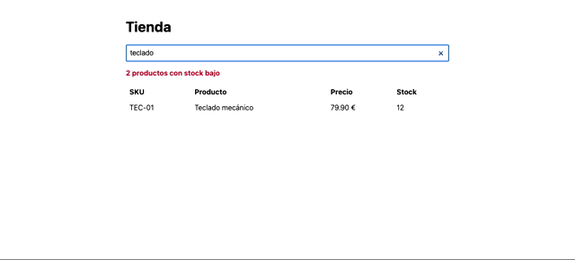

Hermes Agent, de cero a producción
Qué es el agente open source de Nous Research, cómo instalarlo y qué puedes hacer con él en la oficina y en tu código. Al final, cómo se compara con Claude, OpenClaw, Codex y el resto del mercado.
- Versión estable
- v0.21.6
- Publicada
- 8 oct 2026
- Licencia
- MIT
- Pruebas
- 28 reales
- Coste de todas las pruebas
- ≈ 0,56 $ con Hermes
Cada módulo tiene la explicación aquí y los ficheros en el repositorio de GitHub. Todos los ejemplos marcados probado se ejecutaron de verdad el 9 de octubre de 2026 con Hermes v0.21.6: lo que ves son resultados reales, con su tiempo y su coste. Marca cada módulo como completado para seguir tu progreso (se guarda solo en tu navegador).
Qué es Hermes y para qué sirve
Entender las piezas de un agente y qué hace distinto a Hermes antes de instalar nada.
Hermes Agent es un agente de IA autónomo y open source publicado por Nous Research el 25 de febrero de 2026. No es un modelo: es el programa que rodea a un modelo (Claude, GPT, Gemini, Hermes 4, uno local…) y le da manos, memoria y presencia.
Open source significa que el código es público (en GitHub) y puedes leerlo, instalarlo y modificarlo. El modelo es el que «piensa» y escribe texto; por sí solo no puede tocar tu ordenador. Hermes es el programa que le deja hacerlo.
Un chatbot responde; un agente actúa en bucle: piensa, llama a una herramienta (terminal, ficheros, web, navegador, MCP…), lee el resultado y decide el siguiente paso hasta terminar. Una herramienta (tool) es una función concreta que el agente puede invocar: ejecutar un comando, leer un fichero, buscar en la web. MCP (Model Context Protocol) es un estándar abierto para enchufar herramientas externas (GitHub, una base de datos, un CRM…) a cualquier agente compatible. Hermes añade a ese bucle tres cosas que lo diferencian:
- Vive fuera de tu sesión. Un proceso llamado gateway lo mantiene encendido en tu Mac o en un VPS (Virtual Private Server: un servidor alquilado en la nube que está siempre encendido), y puedes hablarle desde Telegram, Slack, Discord, WhatsApp, iMessage, email…
- Aprende. Guarda memoria sobre ti y tu entorno, y convierte lo que resuelve en skills reutilizables que él mismo escribe y mejora.
- Trabaja solo. Programa tareas con cron (el nombre clásico en Unix para «ejecutar algo a una hora fija o cada cierto tiempo»), recibe webhooks (avisos HTTP que otro servicio envía cuando pasa algo, p. ej. «se ha abierto un pull request») y entrega resultados donde le digas.
Cómo leer el diagrama. A la izquierda, las formas de darle trabajo; en el centro, el bucle; a la derecha, lo que puede usar y dónde guarda lo que recuerda.
- CLI · TUI · Desktop: CLI (Command Line Interface) es el chat en la terminal; TUI (Text User Interface) es una interfaz más rica dentro de la misma terminal; Desktop es la app de escritorio.
- Cron · blueprints: tareas programadas; un blueprint es una plantilla de tarea programada lista para rellenar (comando
/blueprint). - Webhooks · CI (
hermes -z): CI (Integración Continua) son las automatizaciones que se ejecutan en cada cambio de un repositorio, como GitHub Actions.hermes -zes el modo «una pregunta, una respuesta y salir», pensado para scripts; lo verás en el módulo 02. - Editor (ACP) · MCP serve: ACP (Agent Client Protocol) permite usar Hermes dentro de editores como VS Code, Zed o JetBrains (
hermes acp).hermes mcp servehace lo contrario que conectar un MCP: expone Hermes como servidor MCP para que otros agentes lo usen. AGENTS.md: fichero de instrucciones del proyecto que Hermes lee si está en la carpeta donde trabajas (convenciones, comandos, qué no tocar).- Modelo: OpenRouter, Anthropic, Nous…: son proveedores, las empresas que sirven el modelo por Internet. Te identificas con una API key (clave secreta) y pagas por uso.
- Terminal: local · Docker · SSH · nube: dónde se ejecutan los comandos. Docker es un contenedor aislado; SSH es una conexión a otra máquina remota.
- Subagentes (
delegate_task): el agente puede lanzar otros agentes para tareas parciales;delegate_taskes el nombre de esa herramienta. ~/.hermes:~es tu carpeta personal (en Mac,/Users/tu-usuario). Ahí guarda Hermes todo su estado; el módulo 01 detalla cada carpeta.
Para qué sirve bien
- Un asistente personal o de equipo 24/7, accesible desde el móvil.
- Automatizar trabajo recurrente: informes, vigilancia, resúmenes, triage.
- Tareas de ofimática "describe el resultado": Excel, Word, PDF, carpetas.
- Rodear tu trabajo de programación: CI, revisión de código, subagentes, entornos aislados.
Para qué no es la mejor opción
- Programar dentro del IDE (el editor de código, como VS Code) con el mejor agente de código posible (ahí ganan Claude Code o Codex; Hermes los puede orquestar, es decir, encargarles trabajo y recoger el resultado).
- Flujos 100 % deterministas (misma entrada, mismo resultado, sin un modelo que decida) con cientos de integraciones (n8n, Zapier).
- Usuarios no técnicos que no quieren tocar una terminal.
Glosario rápido
- Toolset: grupo de herramientas que el agente puede usar (
file,terminal,web,browser…). - Skill: carpeta con un
SKILL.mdque explica un procedimiento. Estándar abierto compartido con Claude. El agente solo carga una skill cuando la tarea la necesita. - Memoria: notas que el agente guarda entre conversaciones (
MEMORY.mdsobre el entorno,USER.mdsobre ti). - Sesión: una conversación guardada, con su historial; se puede retomar más tarde.
- Gateway: proceso en segundo plano que conecta Hermes con mensajería y ejecuta el cron.
- Backend de terminal: dónde se ejecutan los comandos (tu máquina, Docker, SSH, sandbox en la nube).
- Perfil: un Hermes independiente con su propia config, memoria y skills (
hermes -p trabajo;-pes la forma corta de--profiley elige el perfil llamadotrabajo).
Instalación y configuración
probadoInstalar Hermes, conectarlo a un proveedor de modelos y comprobar que responde.
Requisitos mínimos
| Mínimo | Recomendado / notas | |
|---|---|---|
| Sistema | macOS (Apple Silicon) · Windows 10/11 (x86_64, ARM64) · Linux con glibc (x86_64, aarch64) · WSL2 | Soporte prioritario (Tier 1). La app de escritorio MSIX exige Windows 11 22H2+. Linux probado sobre Ubuntu reciente. Intel Mac: solo la CLI, sin prioridad de soporte |
| Herramientas previas | git, curl, tar y shasum/sha256sum | Python, Node, uv, ripgrep y FFmpeg los trae el instalador. En Linux mínimo puede pedir sudo para instalar libatomic1 |
| RAM | 1 GB | 2–4 GB. Las herramientas de navegador (Chromium) son lo que más consume; sin ellas basta 1 GB |
| CPU | 1 núcleo | 2 núcleos. El modelo corre en la nube: no hace falta GPU |
| Disco | ~2,5 GB libres | Nuestra instalación completa ocupa 2,2 GB (330 MB son Chromium; --skip-browser lo omite). Los datos (sesiones, skills) crecen con el uso |
| Modelo | Contexto ≥ 64K tokens | Hermes rechaza al arrancar los modelos con menos contexto. Con modelos locales (Ollama, llama.cpp) sube ctx-size a 65536 |
| Cuenta | API key de un proveedor | OpenRouter, Anthropic, OpenAI, Nous Portal… o un servidor local |
| Red | Conexión a Internet | Para instalar y para hablar con el modelo (salvo modelo local) |
Fuente: Platform Support, Installation y Docker → Resource limits de la documentación oficial. Las cifras de disco son las medidas en nuestra instalación.
Qué significa cada término de la tabla
- Apple Silicon / Intel: los chips M1, M2… de Apple frente a los Mac antiguos con procesador Intel.
x86_64,ARM64,aarch64: arquitecturas de procesador.x86_64es la de casi todos los PC;ARM64yaarch64son dos nombres de la misma arquitectura ARM de 64 bits.- glibc: la biblioteca básica de C de la mayoría de distribuciones Linux (Ubuntu, Debian, Fedora). Si tu distribución la usa, cumples este requisito.
- WSL2: Windows Subsystem for Linux, un Linux real que corre dentro de Windows.
- Tier 1: plataformas con soporte prioritario: el proyecto procura no romper nunca su instalación y sus fallos se corrigen primero.
- MSIX: el formato de paquete de instalación moderno de Windows.
git,curl,tar,shasum/sha256sum: descargar el código, descargar ficheros, descomprimirlos y comprobar con una huella SHA-256 que lo descargado no está corrupto ni alterado.sudo/libatomic1:sudoejecuta un comando como administrador;libatomic1es una biblioteca del sistema que el Node incluido necesita y que algunas distribuciones mínimas no traen.uv, ripgrep, FFmpeg, Chromium: gestor de entornos de Python, buscador de texto muy rápido, conversor de audio y vídeo, y el navegador que el agente controla.- Token y contexto: un token es un trozo de palabra (unos 4 caracteres en inglés); los proveedores cobran por tokens. El contexto es cuántos tokens puede tener el modelo a la vista a la vez: instrucciones, historial, resultados de herramientas. Hermes necesita al menos 64K (unos 64 000).
- Ollama, llama.cpp y
ctx-size: programas para ejecutar modelos en tu propia máquina. Por defecto suelen arrancar con un contexto menor; hay que subirlo: en llama.cpp con la opción--ctx-sizey en Ollama conOLLAMA_CONTEXT_LENGTHonum_ctx. - API key: clave secreta que identifica tu cuenta ante el proveedor y con la que te cobra el uso. Trátala como una contraseña.
Instalar
# curl descarga el script del instalador y | (pipe) se lo pasa a bash, que lo ejecuta. # -f: falla si el servidor da error · -s: sin barra de progreso · -S: pero sí muestra errores · -L: sigue redirecciones curl -fsSL https://hermes-agent.nousresearch.com/install.sh | bash
# PowerShell. irm (Invoke-RestMethod) descarga el script; iex (Invoke-Expression) lo ejecuta
iex (irm https://hermes-agent.nousresearch.com/install.ps1)# descarga la imagen oficial; :stable es la etiqueta de la versión estable docker pull nousresearch/hermes-agent:stable # monta un volumen en /opt/data para que la memoria y la config persistan # (p. ej. -v ~/.hermes:/opt/data: la carpeta de tu máquina se ve dentro del contenedor; # sin volumen, todo se pierde al borrar el contenedor)
# Descarga desde https://hermes-agent.nousresearch.com # macOS: Apple Silicon (Intel tiene bundle aparte) · Windows 11 22H2+ (MSIX) # Linux: sin paquete de escritorio oficial; instala la CLI y ejecuta hermes desktop # Si ya tienes la CLI: hermes desktop
El instalador trae su propio Python 3.14, Node, ripgrep, FFmpeg, uv y un Chromium para el navegador. No toca el Python de tu sistema. En nuestra prueba (Mac mini M-series) tardó unos 3 minutos y dejó instaladas 58 skills de serie.
Opciones útiles: --non-interactive, --skip-browser, --skip-computer-use. Ojo: el instalador sigue la rama main (nuestra prueba quedó en v0.21.6+301); para fijar una versión exacta usa --commit <sha>.
--non-interactive: se salta los pasos que piden datos (asistente de configuración y gateway). Útil en servidores y scripts; luego configuras con los comandos de abajo.--skip-browser: no instala las herramientas de navegador ni su Chromium (ahorra unos 330 MB).--skip-computer-use: no instala el driver que permite al agente mover el ratón y teclear en tu escritorio.maines la rama principal del repositorio en git: recibe cambios cada día, así que dos instalaciones hechas en días distintos pueden diferir.v0.21.6+301se lee «la versión publicada v0.21.6 más 301 cambios (commits) posteriores».--commit <sha>: el sha es el identificador de un commit (p. ej.8bff64d). Fijarlo hace la instalación reproducible: todos los alumnos tienen exactamente el mismo código.
Como el script llega por un pipe, las opciones se pasan así: curl -fsSL …/install.sh | bash -s -- --skip-browser. -s le dice a bash que lea el script de la entrada estándar y -- separa sus opciones de las del instalador.
Dónde queda cada cosa
~/.local/bin/hermes ← lanzador (se añade al PATH en ~/.zprofile) ~/.hermes/ ├── hermes-agent/ ← código fuente (git) ├── config.yaml ← configuración sin secretos ├── .env ← API keys y tokens ├── SOUL.md ← identidad y tono del agente ├── memories/ ← MEMORY.md y USER.md ├── skills/ ← skills incluidas, instaladas y creadas por el agente ├── cron/ ← jobs y sus salidas └── sessions/ logs/ checkpoints/ ← conversaciones · registros · copias previas a cambios
~ es tu carpeta personal. Un nombre que empieza por punto (.hermes, .env) es oculto: no aparece en Finder ni con ls a secas, sí con ls -a.
- PATH: la lista de carpetas donde la terminal busca los programas. Gracias a ella escribes
hermesen lugar de~/.local/bin/hermes. ~/.zprofile: script quezsh(la terminal por defecto en macOS) ejecuta al abrir una sesión. El instalador añade ahí la línea que mete~/.local/binen el PATH; en Linux conbashel equivalente es~/.bashrc.- Lanzador: un pequeño ejecutable que arranca el programa real, instalado en
hermes-agent/. config.yamly.env: la configuración se separa en dos ficheros a propósito.config.yaml(formato YAML: claves y valores con sangría) guarda ajustes que puedes enseñar o copiar;.envguarda solo secretos, en líneasNOMBRE=valor(variables de entorno). Así compartes tu configuración sin filtrar claves.SOUL.md: texto en Markdown que se le inyecta al agente en cada conversación para fijar su personalidad y tono.checkpoints/: copias de los ficheros antes de que el agente los modifique, para poder deshacer. Solo se crean si activas los checkpoints; lo verás con/rollbacken el módulo 02.
Conectar un modelo (OpenRouter)
hermes model # asistente: elige OpenRouter, pega la clave, elige modelo hermes setup # asistente completo: modelo, terminal, gateway, herramientas
OpenRouter es un intermediario: con una sola API key das acceso a modelos de muchas empresas (Anthropic, OpenAI, Google…) y pagas en una sola cuenta. Por eso lo usamos en el curso: cambiar de modelo no exige abrir otra cuenta. En hermes setup, «terminal» significa dónde se ejecutan los comandos (tu Mac, Docker, SSH…) y «gateway» la conexión con apps de mensajería; puedes dejarlos por defecto ahora.
Abre una terminal nueva tras instalar: el instalador añade Hermes al PATH en ~/.zprofile. hermes model y hermes setup son asistentes interactivos, así que necesitan una terminal real; desde un script, un pipe u otro agente usa la alternativa de abajo.
Alternativa sin asistente. hermes config set decide el fichero según la clave: MAYÚSCULAS van a .env, rutas con puntos a config.yaml.
# sintaxis: hermes config set <clave> <valor> hermes config set OPENROUTER_API_KEY sk-or-... # tu clave de OpenRouter (empieza por sk-or-) → ~/.hermes/.env hermes config set model.provider openrouter # qué proveedor usar → config.yaml, sección model hermes config set model.default anthropic/claude-haiku-5.5 # modelo por defecto → config.yaml
model.provider se lee «la clave provider dentro de la sección model» de config.yaml. El nombre del modelo sigue el formato de OpenRouter, empresa/modelo: aquí, Claude Haiku 5.5 de Anthropic, un modelo rápido y barato, adecuado para las pruebas. Para comprobar dónde ha quedado cada cosa: hermes config path y hermes config env-path imprimen la ruta de cada fichero, y hermes config get model muestra la sección.
Comprobar
hermes --version # qué versión tienes instalada hermes doctor # revisa configuración y dependencias, y señala lo que falte hermes -z "Responde solo: OK y tu modelo" --usage-file uso.json # → OK. Soy Hermes Agent con anthropic/claude-haiku-5.5 vía OpenRouter. (8 s, 0,0025 $) cat uso.json # muestra el informe de tokens y coste de esa llamada
Qué significa cada parte de la tercera línea:
-z "…"(forma larga--oneshot): modo one-shot. Envía una sola pregunta, imprime solo la respuesta final y termina. Es la prueba más corta posible de que la clave, el proveedor y el modelo funcionan de punta a punta.--usage-file uso.json: al acabar, Hermes escribe enuso.jsonun informe en formato JSON (texto estructurado en pares clave-valor, fácil de leer desde un script) con el modelo, los tokens de entrada y salida, el número de llamadas a la API y el coste estimado en dólares. Lo pedimos para saber cuánto cuesta cada prueba en lugar de suponerlo: de ahí sale la cifra 0,0025 $. El nombreuso.jsones libre; el fichero se crea en la carpeta donde estés y se sobrescribe en cada ejecución. Solo funciona junto a-z, y se escribe incluso si la ejecución falla.
Requisito del modelo: al menos 64K tokens de contexto. Actualizar: hermes update (descarga la última versión de main y reinstala dependencias; hermes update --check solo comprueba si hay una nueva). Copia de seguridad: hermes backup (crea un .zip con toda tu configuración, skills, sesiones y datos; incluye credenciales, así que guárdalo como guardarías una contraseña). Desinstalar: hermes uninstall --dry-run (ensayo: enseña lo que borraría sin borrar nada) y luego --full (lo borra todo, configuración y datos incluidos).
Primeros pasos: modos y comandos
probadoSaber cuándo usar el chat interactivo y cuándo el modo one-shot para scripts.
| Modo | Comando | Cuándo |
|---|---|---|
| Interactivo | hermes · hermes --tui | Trabajo del día a día |
| One-shot | hermes -z "…" | Scripts, CI, pipes. Imprime solo la respuesta final |
| One-shot con sesión | hermes chat -Q -q "…" | Igual, y muestra el session_id para retomarla |
| Desde stdin | … | hermes chat -Q --query-file - | Pasarle datos generados por otro comando |
- Interactivo: abres una conversación y vas escribiendo turno a turno.
hermesabre la CLI clásica;hermes --tuiabre la TUI, una interfaz más rica dentro de la misma terminal. - One-shot («de un tiro»): una pregunta, una respuesta y el programa termina. Como no espera a que escribas nada, sirve dentro de scripts, de CI (las automatizaciones de un repositorio, como GitHub Actions) o de tareas programadas.
- Pipe (
|): conecta la salida de un comando con la entrada del siguiente. A esa entrada se le llama stdin (entrada estándar). hermes chates el subcomando de conversación.-q "…"(--query) le da la pregunta;-Q(--quiet, «silencioso») quita banner, animación y avisos de herramientas, y responde y sale. Al final imprime elsession_id, el identificador de la sesión guardada, que sirve para retomarla.--query-file -: lee la pregunta de un fichero; el guion-significa «de stdin». Lo que llega por el pipe se toma tal cual, sin que la shell interprete comillas ni$.
hermes chat -q "…" en una terminal real abre una sesión interactiva con ese primer mensaje. Para que responda y salga añade -Q, --oneshot o usa -z.
# 1. Pregunta con coste medido # --usage-file guarda en uso.json los tokens y el coste de esta llamada (solo con -z) hermes -z "Explica en 3 líneas qué es un agente de IA" --usage-file uso.json cat uso.json # mira estimated_cost_usd, input_tokens y output_tokens # 2. Prompt + datos por stdin # ( … ; … ) agrupa dos comandos y junta su salida: primero la pregunta (echo), # luego la lista de tu carpeta personal con los ocultos (ls -a ~). Todo entra por el pipe. (echo "¿Qué ficheros ocultos son de configuración?"; ls -a ~) | hermes chat -Q --query-file - # 3. Otro modelo solo para esta consulta (no cambia tu config.yaml) # -m: modelo, en formato empresa/modelo · --provider: quién lo sirve (exige -m) hermes -z "¿Quién eres?" -m openai/gpt-6.1-sol --provider openrouter # 4. Superficie mínima: solo ficheros y web # -t (--toolsets): lista separada por comas, sin espacios, de los toolsets permitidos hermes -t file,web -z "Resume https://hermes-agent.nousresearch.com en 3 viñetas" # 5. Retomar hermes -c # (--continue) continúa la última sesión hermes --resume <id> # retoma una sesión concreta por su session_id
-t file,web
Un toolset es un grupo de herramientas. file trae leer, escribir, editar y buscar ficheros; web trae buscar en Internet y extraer el contenido de una página. Con -t file,web el agente solo tiene esos dos grupos para esta ejecución: no tiene terminal, ni navegador, ni la herramienta de memoria. Para resumir una web no necesita más, y cuantas menos herramientas tiene, menos puede hacer fuera de lo que pides (eso es la superficie mínima) y menos texto de definiciones de herramientas se envía al modelo. Sin -t, usa los toolsets activados en tu configuración; hermes tools list te los enseña todos.
Slash commands que vas a usar a diario
Un slash command es una orden que escribes dentro del chat interactivo empezando por /. No se envía al modelo: la ejecuta Hermes directamente.
| Comando | Para qué |
|---|---|
Ctrl+P · /help | Paleta de comandos y ayuda |
/model · /reasoning high | Cambiar de modelo y de nivel de razonamiento |
/new · /resume · /sessions | Gestionar conversaciones |
/usage · /context · /compress | Coste, contexto ocupado y compactarlo |
/plan | Que piense un plan antes de tocar nada |
/goal <objetivo> | Bucle hasta cumplirlo, con un modelo juez |
/bg <tarea> · /agents · /steer | Trabajo en segundo plano y subagentes en vivo |
/rollback · /diff | Deshacer cambios en ficheros |
/memory · /skills · /tools | Ver lo que sabe y lo que puede usar |
/yolo | Quitar aprobaciones. Solo en un entorno aislado |
Qué hay detrás de cada fila:
- Paleta de comandos (
Ctrl+P): buscador de todos los comandos y skills; escribes unas letras y eliges. - Nivel de razonamiento: cuánto «piensa» el modelo antes de responder (
none,minimal,low,medium,high,xhigh,max,ultra). Más nivel suele dar mejores respuestas en tareas difíciles, a cambio de más tiempo y más tokens. - Contexto y
/compress:/contextenseña qué parte de la ventana de contexto del modelo está ocupada;/compressresume la conversación para liberar espacio sin empezar de cero. /plan: escribe un plan en Markdown en.hermes/plans/dentro de la carpeta de trabajo, sin ejecutar nada. Lo revisas y luego le pides que lo ejecute./goal: tras cada turno, un segundo modelo (el juez) decide si el objetivo está cumplido; si no, Hermes sigue trabajando solo, con un límite de turnos./bg,/agents,/steer:/bglanza una tarea en una sesión aparte y te deja seguir;/agentslista las tareas y subagentes en marcha;/steerle añade una indicación al agente mientras trabaja, sin interrumpirlo./diffy/rollback:/diffmuestra los cambios de ficheros según git;/rollbackrestaura una copia anterior desde~/.hermes/checkpoints/. Esas copias solo se hacen si los checkpoints están activados (hermes chat --checkpointsocheckpoints.enabled: trueenconfig.yaml).- Aprobaciones y
/yolo: antes de un comando peligroso (borrar, sobrescribir…) Hermes te pide permiso./yoloquita esas preguntas; por eso solo tiene sentido en un entorno aislado, donde un error no puede dañar nada importante.
Hermes en la oficina
probadoDescribir el resultado que quieres y dejar que Hermes elija las herramientas: Excel, Word, carpetas.
Hermes trae skills para docx, xlsx, pptx, pdf, Google Workspace, Notion, Airtable, Obsidian, Apple Notes/Reminders y correo. No hay que programar: el truco está en escribir el prompt como un encargo a un becario muy rápido: formato de salida, restricciones y qué hacer ante la duda. Ficheros en 02-ofimatica/.
Una skill es un paquete de instrucciones (a veces con scripts) que enseña al agente a hacer una tarea concreta, por ejemplo crear un .docx. Las de serie viven en ~/.hermes/skills/, agrupadas por categoría (productivity/docx, productivity/xlsx…). No tienes que nombrarlas: Hermes lee la descripción de cada una y elige la que encaja con tu encargo. Luego la ejecuta con sus herramientas: leer y escribir ficheros y lanzar comandos en el terminal. En el módulo 04 escribiremos una propia.
Los tres ejemplos usan la misma forma de lanzar a Hermes:
cd <carpeta-del-ejemplo> # 1. entra en la carpeta: Hermes trabaja en el directorio actual hermes chat -Q -q "encargo" # 2. un único encargo, sin conversación
cd: cambia de carpeta. Para pasar al siguiente ejemplo, vuelve antes a02-ofimatica/concd ...hermes chat: abre una sesión con el agente.-q "…"(--query): el encargo, entre comillas dobles. Puede ocupar varias líneas: mientras no cierres las comillas, el terminal sigue leyendo.-Q(--quiet): modo silencioso. Quita el banner, la animación de espera y la vista previa de cada herramienta, y deja solo la respuesta final. Además, con-QHermes responde y termina; sin él,-qsolo abre un chat interactivo con ese primer mensaje.
Por qué así: para un encargo cerrado no necesitas conversar, y una salida limpia es más fácil de leer y de copiar. Los ficheros que pidas aparecen en la carpeta desde la que lanzas el comando, así que ejecuta cada ejemplo desde su carpeta. Cada una trae salida-ejemplo/ con lo que generó Hermes en nuestra prueba, para que compares.
A · CSV de gastos → Excel con fórmulas e informe 72 s
# desde 02-ofimatica/gastos-csv/
hermes chat -Q -q "Analiza gastos_T3_2026.csv. Crea informe_gastos_T3.xlsx con: hoja 'Datos'
(los datos como tabla), hoja 'Resumen' con total por categoría y por mes (con fórmulas de
Excel, no valores fijos) y un gráfico de barras por categoría. Después escribe resumen.md
con 5 conclusiones para dirección, incluyendo cualquier gasto anómalo que detectes."Un .csv es una tabla en texto plano: una fila por línea y columnas separadas por comas. Por qué pedimos fórmulas y no valores fijos: si mañana corriges un gasto en la hoja Datos, el resumen se recalcula solo, y cualquiera puede pinchar en una celda y ver de dónde sale el número. resumen.md es un fichero Markdown: texto plano con formato ligero (# para títulos, - para listas), legible tal cual.
Qué hizo:
- Usó
SUMIFS/COUNTIFreales (en Excel en español,SUMAR.SI.CONJUNTOyCONTAR.SI: suman o cuentan solo las filas que cumplen una condición, como «categoría = Viajes»). Y añadió celdas de control que deben dar 0: restan dos formas de calcular el mismo total; si no sale 0, algo no cuadra. - Encontró el gasto trampa que escondimos: un vuelo de 4.850 €, el 33 % del trimestre.
- Señaló dos partidas más a revisar, con su razonamiento.
- Total 14.505,46 €: lo verificamos con Python y cuadra al céntimo.
B · Transcripción de reunión → acta en Word 67 s
# desde 02-ofimatica/acta-reunion/
hermes chat -Q -q "A partir de transcripcion.txt genera acta_reunion.docx: título, fecha de hoy,
asistentes, resumen en 3 líneas, decisiones tomadas, tabla de tareas (responsable, tarea,
fecha límite) y temas pendientes. Formato profesional."Por qué listamos las secciones: así el acta sale igual cada vez y se compara fácil con la reunión. La tabla de tareas con responsable y fecha es lo que luego reutilizaremos en el módulo 04 para generar un correo por persona.
- Revisó el documento renderizado antes de entregarlo.
- Avisó de que "el jueves 16" no existe en octubre de 2026 (el 16 es viernes) y lo marcó en rojo.
- Las fechas límite que nadie dijo quedaron como "No fijada", sin inventarlas.
C · Ordenar una carpeta caótica 47 s
# desde 02-ofimatica/ordenar-carpeta/
hermes chat -Q -q "La carpeta entrada/ está desordenada. Lee el contenido de cada fichero y
organízalos en ordenado/ (facturas/, contratos/, notas/, otros/). Renombra con el formato
AAAA-MM-DD_tipo_descripcion.txt usando la fecha del contenido (si no hay: 'sin-fecha').
No borres nada: copia, no muevas. Crea ordenado/INDICE.md con nombre original, nuevo y carpeta."El porqué de cada restricción. Fecha AAAA-MM-DD al principio (año-mes-día): al ordenar por nombre, los ficheros quedan también en orden cronológico. Copiar, no mover: si la clasificación falla, los originales siguen intactos en entrada/. INDICE.md: una tabla para comprobar de un vistazo qué ha hecho con cada fichero, sin abrir carpeta por carpeta.
- Clasificó por contenido, no por nombre:
IMG_2041.txtera una foto de la pizarra y acabó en notas. - Con "09/12" sin año prefirió preguntar antes que adivinar.
Entrada (qué fichero) + salida exacta (nombre, formato, secciones) + restricciones (copiar, no mover; fórmulas, no valores) + algo auditable (índice, resumen). Para tus carpetas reales añade --checkpoints.
hermes chat --checkpoints guarda una copia del estado de los ficheros antes de cada operación que pueda destruir algo (sobrescribir, borrar). Si el resultado no te gusta, dentro del chat /rollback lista esas copias y restaura la que elijas. Es la red de seguridad para cuando no puedes «copiar, no mover».
Ejercicios propuestos
- "Convierte los PDF de
facturas/en una hoja con proveedor, fecha, base, IVA y total." - "Hazme una presentación de 6 diapositivas a partir de
resumen.md." - Con la skill
email-inbox-triage: "¿Qué correos de hoy requieren respuesta?" Necesita tener configuradohimalaya, un cliente de correo de terminal (IMAP para leer, SMTP para enviar) que Hermes usa a través de su skill del mismo nombre.
Memoria y skills
probadoHacer que Hermes recuerde quién eres y enseñarle procedimientos propios.
Memoria persistente
Cada sesión con un modelo empieza en blanco: solo «sabe» lo que va en su contexto, el texto que recibe en esa llamada (instrucciones, conversación, ficheros leídos). Ese texto se mide en tokens, trozos de palabra por los que pagas y que tienen un tope. La memoria de Hermes son dos ficheros de texto que se añaden al contexto al empezar cada sesión. Viven en ~/.hermes/, la carpeta de Hermes dentro de tu carpeta personal (~).
| Fichero | Qué guarda | Límite |
|---|---|---|
memories/USER.md | Quién eres y tus preferencias | ≈ 1.375 caracteres |
memories/MEMORY.md | Lo que ha aprendido de tu entorno | ≈ 2.200 caracteres |
Por qué tienen límite: se cargan en todas las sesiones, así que cada carácter ocupa contexto y cuesta tokens siempre. Hermes guarda ahí solo lo esencial; para lo demás busca en el historial (más abajo).
hermes -z "Recuerda para siempre: prefiero importes con formato 1.234,56 € y fechas tipo 'viernes 9 de octubre'." cat ~/.hermes/memories/USER.md # entradas separadas por § hermes -z "¿Cómo formateas 1500 euros?" # sesión nueva → 1.500,00 €
hermes -z "…"(--oneshot): manda un único mensaje e imprime solo la respuesta final, sin banner ni vista previa de herramientas. Pensado para scripts. Ojo: en este modo las aprobaciones de comandos se saltan solas.- Por qué dos llamadas separadas: cada
-zes una sesión nueva, sin la conversación anterior. Si la segunda acierta el formato, solo puede ser por la memoria. catmuestra un fichero en el terminal.§es el separador que usa Hermes entre una entrada de memoria y la siguiente.
Se inyecta al inicio de cada sesión, también en cron (las tareas programadas): nuestro job programado del módulo 5 formateó los importes así sin pedírselo. Para el historial completo el agente usa session_search, una de sus herramientas: busca por texto en las sesiones pasadas, que Hermes guarda en una base de datos local (SQLite). Dentro del chat, /memory muestra las escrituras de memoria pendientes de aprobar (ver «Higiene», más abajo).
Skills: procedimientos reutilizables
Una skill es una carpeta con SKILL.md (estándar agentskills.io, el mismo que usan Claude Code y Claude Desktop) y, si hace falta, templates/, scripts/ o references/. Hermes solo carga el nombre y la descripción de cada una; el cuerpo lo lee cuando la necesita (con su herramienta skill_view). Por eso puedes tener decenas de skills sin llenar el contexto, y por eso la descripción es lo más importante: es lo único que el agente ve para decidir si la usa.
--- name: email-seguimiento description: "Genera un correo de seguimiento por responsable a partir de un acta." version: 1.1.0 metadata: hermes: tags: [Reuniones, Email, Seguimiento] related_skills: [meeting-action-items, docx] --- # Email de seguimiento tras una reunión ## Procedimiento 1. Lee la fuente. Identifica decisiones y tareas con responsable y fecha. 2. Agrupa las tareas por responsable. 3. Rellena templates/email.md. Si una fecha no se fijó, escribe "a definir". 4. Escribe correos/AAAA-MM-DD_<nombre>.md 5. Valida: python3 ${HERMES_SKILL_DIR}/scripts/validar_correos.py correos/ ## Comprobaciones antes de terminar - Cada tarea aparece exactamente en un correo.
Qué significa cada parte:
- El bloque entre
---es el frontmatter: datos en formato YAML (clave: valor) que Hermes lee sin abrir el resto. name: el identificador; es lo que escribes tras-s.description: qué hace y cuándo usarla.version: para saber qué copia tienes.metadata.hermes: datos propios de Hermes.tagsson etiquetas para buscar;related_skills, skills que conviene tener a mano (docxpara leer un acta en Word).- Debajo, en Markdown, el cuerpo: el procedimiento paso a paso y las comprobaciones finales.
templates/email.mdes la plantilla del correo, con huecos{{nombre}},{{filas_tareas}}… que el agente rellena.
# instalar: copiar la carpeta de la skill (desde 03-memoria-y-skills/) cp -r skills/email-seguimiento ~/.hermes/skills/productivity/ hermes skills list | grep seguimiento # comprueba que Hermes la ve # usar: desde la carpeta donde está la transcripción del módulo 03 cd ../02-ofimatica/acta-reunion hermes chat -Q -s email-seguimiento -q "Prepara los correos de seguimiento de transcripcion.txt" ls correos/ # un .md por persona
cp -rcopia una carpeta entera (-r, recursivo: con todo lo que tiene dentro). Instalar una skill es solo eso: ponerla en~/.hermes/skills/.productivity/es la categoría, la misma carpeta donde estándocxomeeting-action-items.hermes skills listlista las skills instaladas;| grep seguimientofiltra las líneas que contienen esa palabra.-s email-seguimiento(--skills) precarga la skill en la sesión. Sin-stambién funciona, porque Hermes la descubre por su descripción; con-ste aseguras de que la usa.-Qy-qson los del módulo 03: encargo único, salida limpia.
Cuatro borradores, uno por persona, con la plantilla aplicada. Además detectó que el 24 de octubre de 2026 cae en sábado y pidió confirmarlo.
Scripts dentro de la skill: el punto medio
La versión 1.1 de la skill trae scripts/validar_correos.py, y su SKILL.md obliga a ejecutarlo antes de terminar. ${HERMES_SKILL_DIR} se sustituye por la ruta de la skill: Hermes la cambia al cargar el SKILL.md, así el paso funciona esté donde esté instalada. En tu terminal esa variable no existe; para ejecutarlo tú, usa la ruta real (segundo comando del bloque). El script comprueba sin LLM (sin modelo de lenguaje, es decir, sin IA) lo que se puede comprobar con código: nombres de fichero, cabeceras, huecos sin rellenar y si cada día de la semana cuadra con el calendario.
# así lo ejecuta el agente, dentro de la skill: python3 ${HERMES_SKILL_DIR}/scripts/validar_correos.py correos/ # así lo ejecutas tú, desde 03-memoria-y-skills/, sobre la salida de ejemplo: python3 skills/email-seguimiento/scripts/validar_correos.py salida-ejemplo/correos 2026 # OK 2026-10-09_marta.md # ~ aviso (ya marcado para revisar): 'jueves 16 de octubre': el 16/10/2026 es viernes
El primer argumento es la carpeta de correos. El segundo, 2026, es el año que aplica a las fechas escritas sin año («jueves 16 de octubre»); si no lo pones, usa el año en curso. Un error hace que el script termine con código 1 y el agente debe corregir y repetir; un aviso es una fecha incoherente que ya viene marcada con [revisar: …], porque está mal en la fuente y no se corrige, se señala.
| Qué es | Cuándo | |
|---|---|---|
| Determinista | Un script, sin LLM | Lo que tiene una única respuesta correcta: validar, convertir, desplegar |
| Pseudodeterminista | Skill = procedimiento + scripts que el agente debe ejecutar | La mayoría de procesos de empresa |
| No determinista | Un prompt suelto | Explorar, redactar, decidir |
Skills de proyecto frente a skills de Hermes
Las skills pueden vivir en dos sitios: en tu Hermes (~/.hermes/skills/) o dentro de un repositorio de código (<repo>, la carpeta raíz del proyecto).
~/.hermes/skills/ | <repo>/.hermes/skills/ | |
|---|---|---|
| Qué guardan | Tu forma de trabajar: el flujo, cómo redactas, cómo revisas | Cómo se ejecuta este producto: levantar el entorno, desplegar, datos de prueba |
| Quién las mantiene | Tú… y el propio agente, que las crea y parchea | El repo, con revisión de código |
| Se activan | Siempre | Tras hermes skills trust, y tienen prioridad |
| ¿Las toca el agente? | Sí: skill_manage y el curator | Esos dos no; pero no son de solo lectura |
hermes skills trust, ejecutado dentro del repo, marca ese proyecto como de confianza para que carguen sus skills. Por qué hace falta: al clonar un repo ajeno no quieres que sus skills (que pueden ejecutar scripts) se activen solas.hermes skills untrustlo revoca.skill_managees la herramienta con la que el agente crea, edita y borra skills.- El curator es una tarea en segundo plano que, cada cierto tiempo, revisa las skills creadas por el agente: consolida las repetidas y archiva las que no se usan. No toca las de serie ni las instaladas del hub, y lo archivado se puede recuperar.
Así un mismo Hermes trabaja en varios productos: el flujo vive en Hermes y la ejecución, en cada repo. Lo usamos en el módulo 10.
Higiene: que tu entorno no derive
Por defecto, una revisión en segundo plano (un modelo auxiliar que repasa lo que acabas de hacer, sin que lo veas) tras cada turno puede crear o parchear skills y memoria sin preguntarte. Con semanas de uso, tu entorno ya no se parece al de nadie, y aparece el síntoma típico: sale un modelo nuevo y "a mí no me funciona", porque instrucciones pensadas para el modelo anterior lo frenan.
Estas claves están en ~/.hermes/config.yaml, el fichero de configuración de Hermes. El punto indica anidamiento: skills.write_approval es la clave write_approval dentro del bloque skills:. Las órdenes que empiezan por / (/skills pending) se escriben dentro del chat, no en el terminal.
| Clave | Por defecto | Qué hace |
|---|---|---|
skills.write_approval | false | true: toda escritura de skills queda pendiente (/skills pending) |
memory.write_approval | false | Igual para la memoria (/memory pending) |
auxiliary.background_review.enabled | true | false: sin autoaprendizaje en segundo plano |
curator.enabled | true | Poda skills sin uso; hermes curator pin <skill> protege una |
hermes config set skills.write_approval true
hermes curator status
hermes profile export default -o mi-entorno.tar.gz # foto de tu entorno, sin credencialeshermes config set <clave> <valor>cambia una clave deconfig.yamlsin abrir el fichero.hermes curator statusmuestra el estado del curator y las estadísticas de tus skills.hermes profile exportempaqueta un perfil (una instancia aislada de Hermes;defaultes la tuya) en un.tar.gz, un fichero comprimido.-oindica el fichero de salida. Deja fuera las credenciales (auth.json,.env). Sirve como copia de seguridad o para comparar tu entorno con el de otra persona; revisa antes la memoria, que puede llevar datos personales.
- Que las escriba él: tras resolver algo,
/learno "guarda esto como skill"./learncrea una skill reutilizable a partir de lo que le indiques: esta conversación, una carpeta, una URL o unas notas. - Hub:
hermes skills search pdf,inspectantes deinstall(una skill puede ejecutar scripts). El hub es el conjunto de registros públicos de skills;searchbusca en ellos,inspect <id>muestra una sin instalarla einstall <id>la instala.
Automatización: cron y blueprints
probadoProgramar trabajo recurrente, con o sin LLM, y elegir dónde llega el resultado.
Tres palabras para empezar. Un job es una tarea programada: qué hacer y cuándo. Cron es el nombre clásico de Unix para el programador de tareas, y Hermes lo usa para su propio programador. El gateway es un proceso de Hermes que vive en segundo plano: conecta la mensajería (módulo 06) y, cada 60 s, revisa el calendario y lanza los jobs que tocan. Sin gateway los jobs se crean pero no se ejecutan solos (Hermes te lo avisa al crearlos).
hermes gateway install && hermes gateway start # launchd en macOS, systemd en Linux hermes cron status # ¿está vivo el programador? hermes cron create "every monday 9am" \ "Lee /ruta/gastos_T3_2026.csv y dame en 3 viñetas el total y la categoría con más gasto." \ --name resumen-gastos-semanal --deliver telegram hermes cron list hermes cron run <id> # dispararlo ya, para probar
Qué significa cada parte:
gateway installregistra el gateway como servicio del sistema;gateway startlo arranca.launchd(macOS) ysystemd(Linux) son los gestores de servicios del sistema operativo: lo mantienen vivo y lo relanzan al reiniciar. Así los jobs corren aunque cierres la terminal.&&ejecuta el segundo comando solo si el primero termina bien.cron createrecibe dos argumentos entre comillas: el horario ("every monday 9am", cada lunes a las 9) y el prompt, la instrucción que el agente ejecutará cada vez. El prompt debe valerse solo: el job no ve tu conversación, por eso la ruta al CSV es absoluta.- La
\al final de línea solo parte un comando largo en varias líneas; la shell lo lee como uno. --namele pone un nombre legible.--deliverdice adónde llega el resultado (ver «Destinos»). Si no lo pones, el resultado se guarda en local.cron listmuestra los jobs con suid(12 caracteres) y su próxima ejecución.cron run <id>lo pone en cola para el siguiente repaso del programador (como mucho 60 s), sin esperar a su hora.
Horarios
- Una vez:
in 30m(dentro de 30 minutos),2026-11-03T09:00:00(fecha y hora exactas, formato ISO) - Intervalo:
30m,every 2h(cada 30 minutos, cada 2 horas) - Natural:
weekdays at 9am(laborables a las 9),daily at 7am - Cron:
0 9 * * 1-5
Destinos (--deliver)
local→~/.hermes/cron/output/telegram,discord:#canal,slack,emailorigin: el chat donde lo pediste- Si no hay nada nuevo responde
[SILENT]y no envía nada
La expresión cron clásica tiene cinco campos separados por espacios: minuto, hora, día del mes, mes y día de la semana. * significa «cualquiera» y 1-5 es un rango (lunes a viernes; 0 es domingo). Así, 0 9 * * 1-5 se lee «en el minuto 0 de las 9, cualquier día del mes, cualquier mes, de lunes a viernes»: lo mismo que weekdays at 9am.
En los destinos, ~ es tu carpeta de usuario y ~/.hermes/ es la carpeta (oculta, por el punto) donde Hermes guarda su configuración, sus jobs y sus salidas. [SILENT] es una palabra de control: en un job con LLM, el agente la responde cuando no hay nada nuevo que contar, y Hermes entonces no envía nada. Así un resumen diario no te manda mensajes vacíos.
Watchdog sin LLM: coste cero
Un watchdog (perro guardián) es un vigilante: comprueba algo cada cierto tiempo y solo avisa si hay un problema. Para eso no hace falta un modelo de lenguaje (LLM): basta un script. Sin LLM no se gastan tokens, así que cuesta cero.
mkdir -p ~/.hermes/scripts # la carpeta de scripts de cron (-p: créala si no existe) cp scripts/espacio_disco.sh ~/.hermes/scripts/ hermes cron create "every 1h" --name watchdog-disco --no-agent --script espacio_disco.sh --deliver telegram # el script solo imprime si el disco supera el 85 %: salida vacía = no se notifica
--script espacio_disco.sh: el nombre de un script que está en~/.hermes/scripts/. Hermes solo ejecuta scripts de esa carpeta: así sabes exactamente qué código puede lanzar un job. Los.shse ejecutan con bash; el resto, con Python.--no-agent: no se llama al modelo. El script es el job y lo que imprime (su salida estándar, stdout) se envía tal cual. Si no imprime nada, no llega ningún mensaje.- El script mira el uso del disco con
dfy solo imprime si pasa del umbral. El 85 % es un valor por defecto que deja margen para reaccionar; se cambia dentro del script (variableUMBRAL).
Sin --no-agent, la salida del script se inyecta en el prompt: el script recoge datos y el modelo los interpreta.
El job con LLM devolvió cifras exactas y aplicó la memoria (formato 1.234,56 €). También vimos la seguridad desatendida: en cron los comandos de terminal que necesitan aprobación se deniegan, así que el agente calculó sin ejecutar su script y lo avisó.
«Desatendida» significa que nadie está mirando: en un job no hay una persona que pulse «aprobar», así que Hermes deniega por defecto lo que pediría permiso en un chat. Si un job necesita ejecutar algo, dale un script con --script: ese código lo has revisado tú.
Desde el chat o con blueprints
> Todos los días laborables a las 8:30 mándame por Telegram los titulares de IA de Hacker News /blueprint # morning-brief, important-mail, weekly-review, # price-watch, competitor-watch, news-digest… /blueprint morning-brief time=07:30 deliver=telegram hermes pause # parada de emergencia: cron, kanban y gateway hermes resume # levanta la parada
- El
>indica algo que escribes dentro del chat de Hermes, no en la terminal. Hermes entiende la petición y crea el job él mismo con su herramientacronjob. - Las órdenes que empiezan por
/(slash commands) también se escriben dentro del chat. Un blueprint es una plantilla de automatización ya hecha:/blueprintsin nada lista las disponibles, y con un nombre la crea. Los huecos que rellenas se pasan comoclave=valor: aquítime=07:30(a qué hora) ydeliver=telegram(adónde). hermes pausedetiene el trabajo nuevo (jobs de cron, tareas del tablero kanban, el tablero de tareas para equipos de agentes que verás más adelante, y mensajes nuevos al gateway) hastahermes resume. Lo que ya está en marcha termina; no se mata a medias.
hermes cron pause <id> # desactivar un job sin borrarlo hermes cron resume <id> # reactivarlo hermes cron remove <id> # borrarlo hermes cron runs <id> # historial de ejecuciones: cuándo corrió y cómo acabó
Disparo único tras un despliegue
Un job de una sola vez sirve para encadenar trabajo a algo que tarda: despliegas una preview, sabes que tarda unos minutos y programas la comprobación para cuando esté lista. Al ejecutarse, el job se borra solo.
Una preview es una versión de prueba de tu app publicada para revisarla antes de darla por buena. La comprobación es un smoke test (prueba de humo): una verificación rápida de que lo básico funciona, sin entrar en detalle.
cp scripts/smoke_despliegue.sh ~/.hermes/scripts/ # la URL se fija dentro del script hermes cron create "in 5m" --no-agent --script smoke_despliegue.sh --name smoke-pr-42 --deliver telegram # → ✅ http://127.0.0.1:8765 responde: 6 productos en el catálogo (llegó al móvil)
"in 5m": una sola vez, dentro de 5 minutos.smoke-pr-42es solo un nombre: la comprobación del pull request (PR) número 42 de tu proyecto.- El script hace dos peticiones con
curl:/salud(¿está viva la app?) y/api/productos(¿devuelve datos?). Cuenta los productos e imprime una línea con ✅ o ❌.127.0.0.1:8765es tu propia máquina, puerto 8765: la tienda de ejemplo del módulo 10. - Por qué la URL va escrita en el script: el script lo ejecuta el gateway, no tu terminal. Una variable de entorno que pongas en tu shell al crear el job no le llega.
Sin --no-agent, el mismo job puede lanzar un agente que abra la URL en el navegador y recorra la feature: el E2E del módulo 10, disparado por el despliegue. E2E (end to end, de extremo a extremo) es una prueba que usa la app como lo haría una persona.
Mensajería: Hermes en Telegram
probadoHablar con tu agente desde el móvil, con la misma memoria y skills.
La pieza que lo hace posible es el gateway (módulo 05): el proceso de Hermes en segundo plano que escucha las plataformas de mensajería y pasa cada mensaje al agente. En Telegram, tu agente aparece como un bot: una cuenta de Telegram manejada por un programa en vez de por una persona.
- En Telegram, @BotFather →
/newbot→ copia el token. - Tu ID de usuario te lo da @userinfobot.
- Configura y arranca:
- @BotFather es el bot oficial de Telegram para crear bots.
/newbotte pide un nombre y un usuario (debe acabar enbot) y te devuelve el token. - El token es la contraseña del bot: quien lo tenga puede hacerse pasar por él. No lo subas a git ni lo pegues en un chat.
- Tu ID de usuario es un número que identifica tu cuenta (tu nombre visible puede cambiar; el ID no). @userinfobot es un bot que te lo responde al escribirle. Hermes lo usa para saber quién puede hablar con tu agente.
hermes gateway setup # asistente, o bien: hermes config set TELEGRAM_BOT_TOKEN 123456:ABC... hermes config set TELEGRAM_ALLOWED_USERS 111222333 # imprescindible hermes gateway run # primer plano, para probar hermes gateway install && hermes gateway start # como servicio permanente
gateway setupes un asistente interactivo: te pregunta lo mismo paso a paso. Las dos líneas deconfig setson la alternativa manual.hermes config set CLAVE valorguarda un ajuste. Las claves en MAYÚSCULAS como estas van a~/.hermes/.env, el fichero de secretos de Hermes, separado de la configuración normal. Los valores del ejemplo son inventados.TELEGRAM_ALLOWED_USERSes la lista blanca: los IDs que pueden hablar con el bot. Si sois varios, sepáralos con comas.gateway runlo arranca en primer plano: ves los registros en la terminal y se para con Ctrl+C. Ideal para probar.install+startlo dejan como servicio que sigue vivo aunque cierres la terminal.
Sin TELEGRAM_ALLOWED_USERS (o el emparejamiento con hermes pairing approve), cualquiera que encuentre tu bot tendría una terminal en tu máquina.
El emparejamiento (pairing) es la alternativa a escribir IDs: cuando alguien desconocido escribe al bot, el bot le responde con un código; tú lo apruebas desde tu terminal con hermes pairing approve telegram <código>, y hermes pairing list muestra los pendientes y los aprobados.
| En el chat | Para qué |
|---|---|
/approve · /deny | Autorizar o rechazar comandos peligrosos desde el móvil. /approve session autoriza ese tipo de comando durante el resto de la conversación |
/sethome | Este chat pasa a ser tu home channel: recibe las entregas del cron con --deliver telegram |
/handoff telegram | Desde el chat de la terminal: continuar la conversación en el móvil |
/update · /restart | Mantener el agente en remoto: actualizar Hermes y reiniciar el gateway |
El bot conectó en unos 15 s en modo polling (no hace falta abrir puertos). Con /sethome, los avisos del cron y del tablero kanban (el tablero de tareas de los equipos de agentes, más adelante en el curso) llegaron al móvil. Una nota de voz no funcionó: hace falta un motor de voz a texto (Whisper local o un proveedor con API), y el propio bot lo explicó y ofreció alternativas.
Polling significa que es tu máquina la que pregunta a Telegram, cada poco, si hay mensajes nuevos. La alternativa (webhook) es que Telegram llame a tu máquina, y eso exige una dirección pública y un puerto abierto. Con polling basta con tener salida a internet, por eso funciona desde casa sin tocar el router. Whisper es un modelo de voz a texto que puede ejecutarse en tu propio ordenador.
Otras plataformas: Discord, Slack (Socket Mode), WhatsApp, Signal, iMessage (BlueBubbles), Email, Matrix, Teams, Google Chat… Para tenerlo 24/7, un VPS pequeño basta si el modelo está en la nube.
Socket Mode es el modo de Slack que, como el polling, no necesita dirección pública. BlueBubbles es un servidor que corre en un Mac y hace de puente con iMessage. Un VPS (servidor privado virtual) es una máquina alquilada en la nube que está encendida siempre; si el modelo se usa por API, el VPS solo mueve mensajes y no necesita potencia.
Hermes para programadores
probadoDarle contexto de proyecto, dejarle arreglar bugs con red de seguridad y deshacer si hace falta.
Contexto de proyecto
Un agente que entra en un repositorio no sabe cómo se ejecutan sus tests ni qué normas sigue el equipo. Un fichero de contexto se lo dice: es un Markdown en la raíz del proyecto que Hermes lee al empezar y añade a sus instrucciones.
Hermes carga un fichero de contexto, por este orden: .hermes.md/HERMES.md → AGENTS.md (encadenados desde la raíz git) → CLAUDE.md → .cursorrules. Si ya usas Claude Code o Cursor, tus ficheros funcionan sin cambios. /init genera uno, y hermes import-agent importa tu configuración de ~/.claude o ~/.codex.
- Usa el primero que encuentra en ese orden: si hay
HERMES.md, ese gana y los demás no se cargan.AGENTS.mdes una convención compartida por varios agentes de código; por eso es la opción recomendada. - «Encadenados desde la raíz git»: si trabajas en una subcarpeta, Hermes reúne los
AGENTS.mdque haya desde la raíz del repositorio hasta tu carpeta. Así una subcarpeta puede añadir reglas propias a las generales. CLAUDE.mdes el fichero de Claude Code y.cursorrulesel del editor Cursor./init(dentro del chat) recorre el repo y escribe o actualiza unAGENTS.md.hermes import-agenttraslada instrucciones, permisos, servidores MCP (módulo 08), skills y memorias de Claude Code o Codex; enseña una vista previa antes de cambiar nada y nunca importa claves.
# Inventario — instrucciones para agentes ## Comandos - Tests: `uv run pytest -q` ## Convenciones - Precios en euros como float, redondeados a 2 decimales al devolverlos. - Cualquier cambio de comportamiento lleva su test en tests/. - No añadas dependencias sin preguntar.
Cada línea responde a una pregunta que el agente se haría: cómo compruebo que no rompo nada (los tests), qué formato tienen los datos (euros, 2 decimales) y qué límites tengo (tests obligatorios, nada de dependencias nuevas). uv es un gestor de proyectos Python: uv run ejecuta un comando dentro del entorno del proyecto e instala antes lo que falte. pytest lanza los tests y -q (quiet) resume la salida en una línea.
Ejercicio: arreglar bugs con checkpoints 43 s
uv run pytest -q # 1 failed, 2 passed hermes chat -Q --checkpoints -q "Ejecuta los tests, encuentra la causa del fallo y corrígelo. Revisa además si hay otros bugs en src/ que los tests no cubran; si los hay, corrígelos y añade su test. Termina con un resumen breve de los cambios." uv run pytest -q # 6 passed
- «Test en rojo» es un test que falla; «en verde», uno que pasa. Al empezar hay 3 tests: 1 falla y 2 pasan.
hermes chat -q "…"manda una sola petición (query), espera a que el agente termine y sale. Con-Q(quiet) no muestra el banner ni cada herramienta que usa: solo la respuesta final.--checkpointsactiva los puntos de restauración (ver abajo): la red de seguridad por si el agente rompe algo.- El prompt pide dos cosas a propósito: arreglar lo que el test señala y buscar lo que ningún test cubre. Así medimos si el agente razona sobre el código o solo persigue el rojo.
- Corrigió el descuento, que se restaba en euros después del IVA.
- Encontró el bug oculto:
<=donde el docstring decía "estrictamente". - Añadió validación del rango del descuento y 3 tests que fallaban antes del cambio.
- No hizo commit y explicó un cambio de comportamiento que conviene confirmar.
El docstring es el texto entre triples comillas que documenta una función en Python. Decía «por debajo (estrictamente)», es decir <, pero el código usaba <=: un producto con el stock justo en el mínimo salía como «bajo mínimo». Que no hiciera commit es lo que queremos: el cambio queda en tu copia de trabajo para que lo revises tú.
El diff completo está en solucion-referencia.patch.
Un diff muestra qué líneas cambiaron: - las quitadas, + las añadidas. Un fichero .patch es ese diff guardado; puedes compararlo con lo que haga tu agente o aplicarlo con git apply 06-programador/solucion-referencia.patch desde la raíz del repositorio del curso.
Checkpoints y rollback
Con --checkpoints, Hermes guarda un repo git sombra en ~/.hermes/checkpoints/ antes de cada escritura o comando destructivo. No toca tu .git.
Un checkpoint es una foto de los ficheros justo antes de que el agente los cambie. Hermes guarda esas fotos con git, pero en un repositorio aparte (sombra): tu historial y tus commits no se mezclan con ellas. Comando destructivo es el que puede borrar o sobrescribir ficheros. Para activarlo siempre, sin el flag: checkpoints.enabled: true en ~/.hermes/config.yaml.
/rollback # lista de puntos de restauración /rollback diff 2 # qué cambió desde el 2 /rollback 2 # volver hermes checkpoints status # en la terminal: espacio que ocupan, por proyecto
Las órdenes con / se escriben dentro del chat de Hermes; rollback significa «volver atrás». Los números identifican cada checkpoint en la lista que muestra /rollback.
| Necesidad | Cómo |
|---|---|
| Varias tareas en paralelo sin pisarse | hermes -w crea un git worktree por sesión |
| Iterar hasta que todo pase | /goal "tests en verde y ruff sin errores" |
| Usarlo desde VS Code, Zed o JetBrains | hermes acp (Agent Client Protocol) |
| Delegar en otro agente de código | skills incluidas claude-code, codex, opencode |
| Metodología | skills test-driven-development, systematic-debugging, requesting-code-review |
- Un git worktree es una segunda carpeta de trabajo del mismo repositorio, con su propia rama. Dos agentes en dos worktrees pueden editar a la vez sin pisarse los ficheros.
/goalfija un objetivo que el agente persigue turno tras turno hasta cumplirlo.ruffes un linter de Python: revisa el estilo y errores comunes sin ejecutar el código.- ACP (Agent Client Protocol) es un protocolo para que un editor hable con un agente.
hermes acparranca Hermes en ese modo para usarlo desde el editor. - Las skills
claude-code,codexyopencodeenseñan a Hermes a pasar el trabajo a esas herramientas de línea de comandos, si las tienes instaladas. - Las skills de metodología: test-driven development (escribir primero el test que falla, luego el código), depuración sistemática (hipótesis y pruebas, no cambios a ciegas) y pedir revisión de código.
MCP: tus propias herramientas
probadoConstruir un servidor MCP en unas 50 líneas de código y conectarlo a Hermes (y a cualquier otro agente).
MCP (Model Context Protocol) es el estándar para dar herramientas a un agente. Un servidor MCP es un programa pequeño que anuncia sus herramientas (nombre, descripción y parámetros) y las ejecuta cuando el agente las llama. El mismo servidor sirve para Hermes, Claude Desktop, Claude Code o Cursor: lo escribes una vez y lo conecta cualquier cliente MCP. El nuestro expone el inventario de una tienda guardado en SQLite, una base de datos que vive en un único fichero (tienda.db, que el servidor crea junto al script la primera vez que arranca, con cinco productos de ejemplo).
# /// script ← metadatos del script (formato PEP 723) # dependencies = ["mcp>=2.3"] ← uv instala esto solo, al ejecutarlo # /// from mcp.server.mcpserver import MCPServer # mcp 2.x (en 1.x: FastMCP) mcp = MCPServer("tienda") # nombre con el que se presenta el servidor @mcp.tool() # convierte la función en una herramienta MCP def stock_bajo() -> str: """Productos con stock estrictamente por debajo de su mínimo.""" # ← lo lee el modelo ... @mcp.tool() def registrar_pedido(sku: str, unidades: int) -> str: # los tipos definen los parámetros """Registra una venta y descuenta el stock.""" ... if __name__ == "__main__": mcp.run() # escucha por stdio (entrada/salida estándar)
Qué significa cada parte:
- El bloque
# /// scriptdeclara las dependencias dentro del propio fichero. Conuv run servidor_tienda.py, uv (el gestor de paquetes de Python que usamos en el curso) crea un entorno aislado conmcpy lo ejecuta. Así no hayrequirements.txtnipip installprevio: el servidor es un solo fichero que se puede copiar. @mcp.tool()publica la función como herramienta. El SDK lee la docstring (el texto entre""") como descripción y la firma (sku: str, unidades: int) como esquema de parámetros. El modelo decide cuándo llamar a cada herramienta solo por esa descripción, así que escríbela como una instrucción clara.SKUes el código interno de cada producto (TEC-01es el teclado). El fichero completo trae una tercera herramienta,listar_productos.- stdio es el transporte más simple de MCP: el cliente (Hermes) arranca el servidor como un proceso hijo y hablan por su entrada y salida estándar. No hay puertos ni red; el servidor vive mientras lo usa el agente.
Este servidor usa la versión actual del SDK oficial, la 2.x, donde la clase se llama MCPServer. En la 1.x se llamaba FastMCP: si sigues un tutorial de 2025 y ves ModuleNotFoundError, es por eso. Fija la versión en las dependencias del script.
hermes mcp add tienda --command uv --args run "$PWD/servidor_tienda.py"
hermes -z "Dime qué productos hay que reponer y registra un pedido de 2 teclados TEC-01."
# → AUR-BT y RAT-01 bajo mínimo. Pedido registrado; stock de TEC-01: 10. (12 s)Qué significa cada parte del primer comando:
| Parte | Qué hace |
|---|---|
hermes mcp add tienda | Registra un servidor MCP llamado tienda. Ese nombre es la clave en la config y el prefijo con el que verás sus herramientas |
--command uv | El programa que Hermes lanzará para arrancar el servidor (transporte stdio) |
--args run "$PWD/servidor_tienda.py" | Los argumentos de ese programa: Hermes ejecutará uv run …/servidor_tienda.py. --args se traga todo lo que viene detrás, por eso va siempre al final |
"$PWD/…" | $PWD es la carpeta actual. La ruta debe ser absoluta porque Hermes arranca el servidor desde otra carpeta, y una ruta relativa dejaría de encontrarlo |
El segundo comando es el modo one-shot del módulo 02: hermes -z "…" envía una sola petición, imprime la respuesta final y sale. Hermes arranca el servidor, descubre sus herramientas y el modelo elige llamar a stock_bajo y a registrar_pedido. Para comprobar la conexión sin gastar en el modelo, el repositorio usa hermes mcp test tienda, que conecta con el servidor y lista sus herramientas.
mcp_servers: # lo que escribe hermes mcp add tienda: command: uv args: [run, /ruta/absoluta/servidor_tienda.py] # tools: { exclude: [registrar_pedido] } ← oculta esa herramienta al agente # trust: untrusted ← pide aprobación antes de las que pueden escribir
~/.hermes/config.yaml es el fichero de configuración principal de Hermes (~ es tu carpeta personal). Las dos líneas comentadas son las palancas de seguridad: tools.exclude quita herramientas concretas (y tools.include deja solo las que listes); trust: untrusted hace que Hermes pida aprobación antes de cada herramienta del servidor que no esté marcada como de solo lectura y, si nadie puede aprobar, la bloquea. Por defecto un servidor es de confianza plena.
El pedido se registró sin pedir aprobación. Las aprobaciones de Hermes protegen la terminal, no las herramientas MCP. Diseña servidores de solo lectura por defecto, filtra con tools.exclude o pon la confirmación dentro de la propia herramienta.
Al revés también funciona: hermes mcp serve expone Hermes como servidor MCP para Claude Desktop o Cursor. Lo que publica son tus conversaciones de Hermes en las plataformas de mensajería (módulo 06): el otro agente puede listarlas, leer su historial, enviar mensajes y responder aprobaciones pendientes.
Entornos: dónde trabaja el agente
probadoSeparar el cerebro (modelo) de las manos (entorno) y preparar el entorno para que el agente rinda.
Un agente programador rinde tanto como el entorno que le das: dónde ejecuta, qué ve, qué herramientas tiene y cómo comprueba su trabajo. Invertir en eso suele dar más que acumular skills.
En Hermes, el backend de terminal decide dónde se ejecutan los comandos que lanza el agente (su herramienta terminal). El modelo es el mismo; lo que cambia es la máquina en la que actúan sus «manos».
| Backend | Uso típico |
|---|---|
local | Por defecto, tu máquina |
docker probado | Aislamiento reproducible; tu sistema queda intacto |
ssh | Que trabaje en un servidor remoto |
modal · daytona · vercel_sandbox | Sandboxes efímeros en la nube |
singularity | Clústeres HPC |
- Docker ejecuta programas dentro de un contenedor: un Linux aislado, con sus propios ficheros y procesos, que arranca en segundos. El contenedor se crea a partir de una imagen, una plantilla de solo lectura con el sistema y las herramientas ya instaladas. Lo que pase dentro no toca tu Mac.
- SSH es la conexión segura a otra máquina por terminal: el agente ejecuta sus comandos allí.
- Sandbox («caja de arena») es un entorno aislado y desechable.
modal,daytonayvercel_sandboxson servicios que te lo dan en la nube y lo destruyen al acabar. - HPC (High Performance Computing) son los clústeres de cálculo de universidades y centros de investigación;
singularityes el sistema de contenedores que suelen usar en lugar de Docker.
terminal: backend: docker # los comandos del agente corren en un contenedor docker_image: python:3.13-slim # imagen oficial de Python 3.13, versión reducida docker_mount_cwd_to_workspace: true # monta el directorio de lanzamiento en /workspace cwd: "." # NO "/workspace": desactiva el montaje
docker_mount_cwd_to_workspace monta el directorio desde el que lanzas hermes en /workspace, y cwd: "." le dice que trabaje ahí. Si fijas cwd: /workspace explícitamente, el montaje se desactiva y el contenedor arranca vacío. Con esta configuración los tests de la demo corren en Linux aarch64 dentro del contenedor en 21 s. Con backends de contenedor, /rollback no aplica.
Montar una carpeta significa que el contenedor ve tu carpeta real en una ruta suya (/workspace): lo que el agente cambie ahí cambia en tu disco, y el resto del contenedor sigue aislado. cwd es el directorio de trabajo (current working directory), la carpeta donde empiezan los comandos. aarch64 es la arquitectura ARM de 64 bits de los Mac con chip Apple: el contenedor es un Linux para ese procesador. /rollback es el comando de Hermes que deshace cambios de ficheros con los checkpoints (copias previas) que guarda en tu máquina; con contenedores los ficheros viven en el sandbox y esas copias no existen.
Imagen efímera por tarea
Un paso más allá: en vez de un Hermes "vivo" que acumula memoria y skills, cada tarea arranca un contenedor nuevo de Hermes a partir de una imagen que controla el equipo. Mejorar el flujo es publicar una imagen nueva, no limpiar la máquina de cada persona. probado
La carpeta 08-entornos/imagen-equipo/ trae cuatro ficheros: el Dockerfile (la receta de la imagen), config.yaml (modelo, proveedor, máximo de 20 turnos y memoria desactivada, sin secretos), SOUL.md (el fichero que Hermes lee como identidad e instrucciones fijas del agente: aquí, «lee AGENTS.md, ejecuta los tests y resume qué comprobaste») y tarea.sh (el script que lanza cada tarea).
FROM nousresearch/hermes-agent:v0.21.6 # versión fijada COPY --from=ghcr.io/astral-sh/uv:0.11.20 /uv /uvx /usr/local/bin/ # lo que necesitan tus repos COPY config.yaml SOUL.md /opt/data/ # config del equipo, sin secretos
FROMparte de la imagen oficial de Hermes. Lo que va tras:es la etiqueta (versión): fijarla evita que la imagen cambie sola cuando Nous publique otra.COPY --from=…copia ficheros desde otra imagen: aquí, los ejecutablesuvyuvxde la imagen oficial de uv, publicada enghcr.io(el registro de imágenes de GitHub). Es la forma más corta de instalar uv sin descargar nada más.COPY config.yaml SOUL.md /opt/data/mete la config del equipo en/opt/data, que en esta imagen es elHERMES_HOME: la carpeta que en tu Mac es~/.hermes.
docker build -q -t hermes-equipo:local imagen-equipo
docker run --rm \
--env-file <(grep '^OPENROUTER_API_KEY=' ~/.hermes/.env) \ # solo la clave, no todo el .env
-v "$REPO:/workspace" -w /workspace \
hermes-equipo:local -z "Ejecuta los tests y resume el estado. No modifiques ningún fichero."| Parte | Qué hace |
|---|---|
docker build -q -t hermes-equipo:local imagen-equipo | Construye la imagen con el Dockerfile de esa carpeta y la llama hermes-equipo:local (-t, tag). -q la hace silenciosa. Si nada cambió, Docker reutiliza lo ya construido y tarda un instante |
docker run --rm | Arranca un contenedor nuevo y lo borra al terminar (--rm): no quedan restos entre tareas |
--env-file <(grep …) | Pasa variables de entorno leídas de un fichero. <(…) convierte la salida de grep en un fichero temporal, así solo entra la línea OPENROUTER_API_KEY=… de tu ~/.hermes/.env (el fichero donde Hermes guarda tus claves) |
-v "$REPO:/workspace" | Monta la carpeta del repositorio ($REPO, el primer argumento del script) en /workspace dentro del contenedor |
-w /workspace | Fija esa carpeta como directorio de trabajo, donde arranca Hermes |
hermes-equipo:local -z "…" | La imagen que se ejecuta y, detrás, los argumentos que recibe hermes dentro del contenedor: -z es el modo one-shot del módulo 02 (una petición, la respuesta final y sale) |
Resultado real sobre la tienda del módulo 10: "4 de 5 tests pasan y 1 falla", con la causa exacta, git status limpio al terminar y ningún contenedor ni volumen sobrante. Unos 30 s y 0,005 $ por tarea. La imagen ocupa 4,5 GB (trae Chromium, Node y ffmpeg): tenlo en cuenta al dimensionar el servidor.
git status limpio significa que git no ve ningún fichero modificado: el agente cumplió el «no modifiques nada». Un volumen es una carpeta que Docker guarda aparte del contenedor para que sus datos sobrevivan; con --rm también se borran los volúmenes anónimos que creó ese contenedor.
Cuatro decisiones de diseño
- La config va dentro de la imagen, no montada.
/opt/data(elHERMES_HOME) es unVOLUMEde la imagen y Hermes escribe en él su estado: skills incluidas, cachés,state.db, los entornos que monte el agente… Si montas ahí la carpeta del equipo, la ensucias con decenas de MB en cada tarea. Copiada en la imagen, cadadocker run --rmparte de cero y lo tira todo al acabar. - La imagen lleva las herramientas de tus repos. Si
AGENTS.mddiceuv run pytest,uvtiene que estar en la imagen; si no, el agente improvisa (un venv con pip en cada tarea) y deja de ejecutar lo que el repo indica. - La clave nunca va en la imagen. Entra al ejecutar, y solo la del proveedor, no el
.enventero. Hermes no la escribe en disco: enauth.jsonguarda solo su huella. - Decide dónde va la visibilidad. Con
--rmse van también las sesiones yhermes insights. Monta solologs/ysessions/en un volumen, envía la salida a tu sistema de logs o mide el coste con el consumo de la clave en el proveedor, como hicimos aquí.
Términos de esta lista: VOLUME es la instrucción del Dockerfile que declara una carpeta como volumen. state.db es la base de datos donde Hermes guarda sesiones e historial. AGENTS.md es el fichero del repositorio con las instrucciones para agentes (cómo instalar, cómo pasar los tests), que viste en el módulo 07. Un venv es un entorno virtual de Python creado a mano con pip, justo lo que uv automatiza. auth.json es el fichero de credenciales de Hermes; la «huella» es un resumen que identifica la clave sin permitir reconstruirla. hermes insights muestra estadísticas de uso a partir de las sesiones guardadas.
Worktrees y permisos mínimos
Un worktree de git es una segunda carpeta de trabajo del mismo repositorio, en su propia rama: dos agentes pueden editar a la vez sin pisarse los ficheros.
| Necesidad | Cómo |
|---|---|
| Varias tareas a la vez sin pisarse | hermes -w, delegation.worktree_isolation: true, kanban create --workspace worktree |
| Que cada worktree pruebe de verdad | Su propia base de datos y su Redis en Docker, su puerto |
| Quitar herramientas | hermes tools disable web browser computer_use |
| Solo algunas herramientas MCP | mcp_servers.github.tools.include: [list_issues] |
Prohibir comandos siempre (incluso con --yolo) | approvals.deny: ["git push*"] |
Limitar dónde escribe write_file | HERMES_WRITE_SAFE_ROOT=/ruta |
hermes -wabre la sesión en un worktree nuevo;delegation.worktree_isolationda uno a cada subagente;kanban create --workspace worktreeda uno a cada tarjeta del tablero (módulo 10). Redis es una base de datos en memoria muy usada como caché: si dos worktrees comparten la misma, sus pruebas se mezclan.hermes tools disable …desactiva toolsets, los grupos de herramientas de Hermes:web(buscar y leer páginas),browser(manejar un navegador) ycomputer_use(controlar el escritorio).hermes tools listmuestra todos y cuáles están activos.tools.includedeja a un servidor MCP (módulo 08) solo las herramientas listadas.approvals.denyes una lista de patrones de comandos que Hermes bloquea siempre; el*vale por «cualquier cosa».--yoloes la opción que salta todas las aprobaciones, y aun así esta lista se respeta.HERMES_WRITE_SAFE_ROOTes una variable de entorno (un valor que recibe el proceso al arrancar). Si existe, las herramientas de escritura de ficheros (write_fileypatch) solo pueden escribir dentro de esa ruta y Hermes rechaza cualquier otra.
Un agente proactivo que se atasca se las ingenia: codifica en base64 lo que no pasa un filtro, levanta un servidor auxiliar… Cuantas menos herramientas tenga, menos rodeos raros.
Dónde vive Hermes 24/7
Para un equipo, el entorno local no escala. Lo habitual es una máquina que controla el equipo técnico, igual para todos: un VPS de 1–2 vCPU y 2–4 GB, un servidor propio o un mini PC (una Raspberry Pi 4/400 con SO de 64 bits cumple los requisitos), o el contenedor oficial. Se accede por mensajería, por SSH o con una VPN privada como Tailscale para el dashboard. Dimensiona por tareas simultáneas: tres con navegador y base de datos propia no caben en 2 GB.
Un VPS (Virtual Private Server) es un servidor virtual alquilado por meses; vCPU son sus núcleos de procesador y los GB, su memoria RAM. Una VPN privada como Tailscale conecta tus dispositivos con el servidor sin abrirlo a Internet, para entrar al panel web de Hermes (hermes dashboard).
Subagentes en paralelo
hermes -z "Usa delegate_task para lanzar 3 subagentes EN PARALELO (sin modificar ficheros): 1) revisor de seguridad de src/, 2) revisor de cobertura de tests, 3) redactor de un README de 10 líneas. Combina sus resultados en un informe."
delegate_task es la herramienta de Hermes que crea subagentes: copias del agente con una tarea acotada y una conversación propia, que devuelven solo su resultado. Así el agente principal no llena su contexto con los detalles de cada encargo.
Tardó 31 s y cada subagente tuvo su propio contexto. Hasta 10 subagentes en paralelo; usa un modelo más barato para ellos con delegation.model.
Revisión de código en pre-push o CI
Un diff es la lista de líneas añadidas y quitadas entre dos versiones del código. La idea: pasarle a Hermes el diff de tus cambios y que diga si hay algo bloqueante. Puedes lanzarlo como hook pre-push (un script que git ejecuta antes de cada git push y que cancela el envío si termina con error) o en CI (Integración Continua: automatizaciones que corren en cada cambio del repositorio).
DIFF="$(git diff "$BASE" -- .)" # cambios respecto a la rama base (main por defecto) RESULTADO="$(hermes -t file -z "Revisa SOLO este diff... VEREDICTO: OK | BLOQUEANTE ... $DIFF" \ --usage-file .hermes-review-usage.json)" grep -q "VEREDICTO: BLOQUEANTE" <<<"$RESULTADO" && exit 1 # error = push cancelado
Con -t file el revisor no tiene terminal ni web. Coste medido: 0,003 $ por revisión.
-t file-t es la forma corta de --toolsets: la lista, separada por comas, de los grupos de herramientas que tendrá el agente solo en esta ejecución (sin ella usa los que tengas activos en hermes tools). El toolset file incluye cuatro herramientas: read_file (leer), search_files (buscar en contenidos y nombres), write_file (escribir) y patch (editar un trozo). Fuera quedan terminal, web, browser y el resto. Para revisar código basta con leer, y un revisor sin terminal no puede ejecutar nada aunque el diff contenga instrucciones maliciosas.
| Parte | Qué hace |
|---|---|
git diff "$BASE" -- . | Saca el diff entre la rama base y tu código actual. -- . lo limita a la carpeta desde la que lo lanzas |
-z "…" | Modo one-shot: imprime solo la respuesta final, cómoda de procesar en un script. Ojo: en este modo las aprobaciones se saltan automáticamente, otra razón para recortar las herramientas |
VEREDICTO: OK | BLOQUEANTE | Formato de respuesta fijo que pide el prompt. Así el script puede buscar una cadena exacta en lugar de interpretar texto libre |
--usage-file .hermes-review-usage.json | Al terminar, Hermes escribe en ese fichero un JSON con el coste estimado en dólares, los tokens de entrada y salida, el modelo y el número de llamadas. Se escribe incluso si la ejecución falla: es la forma de saber cuánto gasta cada revisión sin abrir el panel del proveedor. El punto inicial del nombre lo convierte en un fichero oculto |
grep -q … <<<"$RESULTADO" && exit 1 | <<< pasa el texto de la variable a grep; -q solo responde sí o no. Si aparece «BLOQUEANTE», el script sale con código 1 (error) y git cancela el push |
Revisión de cada PR en GitHub Actions probado
Una PR (pull request) es la propuesta de unir los cambios de una rama a la principal; el merge es la unión. GitHub Actions es el CI de GitHub: ejecuta en sus máquinas los workflows (ficheros YAML en .github/workflows/) cuando ocurre algo en el repositorio, como abrir una PR. Un secreto es un valor cifrado que GitHub guarda y entrega al workflow sin mostrarlo en los logs.
La plantilla 08-entornos/ci/github-action-review.yml revisa cada PR y deja el resultado como comentario. Cópiala a .github/workflows/ y añade la clave como secreto del repo desde tu terminal:
gh secret set OPENROUTER_API_KEY --repo <usuario>/<repo> # pide la clave sin mostrarlagh es la CLI oficial de GitHub. gh secret set guarda el secreto con ese nombre en el repositorio que indicas; al escribir la clave en tu terminal no pasa por ningún chat ni queda en el historial de comandos.
curl -fsSL https://hermes-agent.nousresearch.com/install.sh \ | bash -s -- --non-interactive --skip-browser --skip-computer-use --branch v0.21.6 git diff origin/$BASE...HEAD > pr.diff HERMES_WRITE_SAFE_ROOT=$RUNNER_TEMP/hermes \ hermes -t file -z "Revisa el diff de pr.diff… No modifiques ningún fichero. VEREDICTO (OK/BLOQUEANTE)…" \ --usage-file usage.json > review.md gh pr comment $PR --body-file review.md
| Parte | Qué hace |
|---|---|
curl -fsSL … | bash -s -- … | Descarga el instalador oficial (-fsSL: silencioso, sigue redirecciones y falla si hay error) y se lo pasa a bash. -s le dice a bash que lea el script de esa entrada y -- marca que lo que sigue son opciones del instalador |
--non-interactive | Sin preguntas: en CI no hay nadie para responder |
--skip-browser · --skip-computer-use | No instala el navegador ni el control de escritorio: el revisor no los usa y la instalación tarda menos |
--branch v0.21.6 | Instala esa versión concreta de Hermes |
git diff origin/$BASE...HEAD > pr.diff | Guarda en pr.diff los cambios de la PR. $BASE es la rama destino; los tres puntos comparan contra el punto en que la rama de la PR se separó de ella, así solo salen los cambios de la PR |
HERMES_WRITE_SAFE_ROOT=$RUNNER_TEMP/hermes | Delante del comando, fija la variable solo para él. $RUNNER_TEMP es la carpeta temporal que GitHub da a cada ejecución |
--usage-file usage.json | Mismo informe de coste y tokens que en el script local; el workflow lo imprime al final para verlo en el log |
> review.md | Guarda la respuesta (en Markdown) en un fichero |
gh pr comment $PR --body-file review.md | Publica ese fichero como comentario en la PR número $PR |
En el fichero real, $BASE y $PR son expresiones de GitHub (${{ github.base_ref }} y el número de la PR), y la clave llega como variable de entorno desde ${{ secrets.OPENROUTER_API_KEY }}. El bloque permissions le da al workflow solo lectura del código y permiso para comentar PR.
| Decisión | Por qué |
|---|---|
Versión fijada en el instalador y hermes --version en el log | Cada PR se revisa con la misma versión; actualizar es un cambio explícito |
El diff en un fichero que el agente lee con -t file | En el prompt chocaría con el límite de tamaño de un argumento en PR grandes; así además puede abrir los ficheros completos |
HERMES_WRITE_SAFE_ROOT a una carpeta temporal | -t file permite leer y escribir: el revisor solo puede tocar esa carpeta |
Sin PR desde forks (if:) | No reciben secretos ni permiso de escritura |
| Una clave propia para CI, con límite de gasto | Si se filtra o alguien abusa del workflow, el daño queda acotado |
Un fork es una copia del repositorio en la cuenta de otra persona. GitHub no entrega secretos a las PR que vienen de forks, así que el workflow fallaría; la condición if: del job directamente no las lanza.
PR de prueba ≈ 2 min · ≈ 0,003 $
- VEREDICTO: BLOQUEANTE, con la línea exacta y el producto que entraría de más (WEB-06, con stock 5).
- El test que rompería (
tests/test_tienda.py:35) y la contradicción con el docstring. - Un hallazgo discutible: que el arreglo de
buscarllegaba sin test. El test ya existía (y era el que fallaba antes del cambio), pero no estaba en el diff. Por eso el revisor comenta y no bloquea el merge por sí solo: quien decide es una persona.
La instalación se lleva ~70 s del total: si revisas muchas PR, cachea ~/.hermes o usa la imagen Docker del equipo.
Hermes como equipo de desarrollo
probadoPasar de "un agente en mi portátil" a un flujo compartido por fases que cualquiera del equipo puede lanzar, con perfiles, tablero kanban, revisión y E2E.
Por qué el entorno local no escala
Mientras trabajas solo, tu portátil es el mejor sitio para el agente. El problema aparece cuando todo el equipo, incluida gente que no programa, quiere que los agentes implementen features o arreglen bugs:
| Problema | Qué pasa en la práctica |
|---|---|
| Cada entorno diverge | Cada persona acumula memorias y skills distintas. Sale un modelo nuevo y "a mí no me va": el arnés viejo lo frena |
| Las skills no fuerzan el proceso | Si el modelo no detecta que debe usar la skill, no la usa. "Ya lo tengo hecho"… sobre una rama vieja |
| Mantener a mano no escala | Repartir skills o plugins y comprobar que todos los tienen al día es un trabajo en sí mismo |
| Recursos | Base de datos, Redis (un almacén de datos en memoria) y navegador no caben en el portátil pequeño de alguien de ventas |
| Cero visibilidad | Un agente en una terminal remota no te dice qué pasó en cada fase |
La salida no es escribir "mejores skills", sino montar un entorno compartido, controlado por el equipo técnico, igual para todos y observable. Hermes trae las piezas: perfiles, tablero kanban con dispatcher, /goal, revisión nativa, cron, mensajería y dashboard.
Antes de seguir, el vocabulario que usa todo el módulo:
| Término | Qué significa |
|---|---|
| Arnés | Todo lo que rodea al modelo y guía su trabajo: instrucciones (SOUL.md, AGENTS.md), skills, herramientas y scripts. El modelo lo pone el proveedor; el arnés lo escribes tú. |
| Perfil | Una instancia aislada de Hermes con su propia carpeta, ~/.hermes/profiles/<nombre>/: configuración (config.yaml), claves (.env), SOUL.md, skills, memoria y sesiones. Aquí, un perfil es un rol del equipo. |
SOUL.md | El fichero de identidad del perfil. Hermes lo carga como instrucciones fijas en cada conversación: "eres el revisor; no modificas código…". |
| Toolset | Un grupo de herramientas que se activa o desactiva junto: browser (navegador), web (búsqueda), memory, delegation (subagentes)… Quitar toolsets es la forma de dar permisos mínimos a un perfil. |
| Kanban (tablero) | Un tablero de tareas por columnas: Triage, Todo, Ready, Running, Review, Blocked, Done. En Hermes es una base de datos SQLite que comparten todos los perfiles. |
| Tarjeta | Una tarea del tablero: título, cuerpo (el encargo), perfil asignado y, si quieres, una tarjeta padre de la que depende. |
| Gateway | El proceso de Hermes que se queda en marcha: conecta con Telegram y otras mensajerías (módulo 06) y aloja el dispatcher. |
| Dispatcher | El bucle que vigila el tablero. Cuando una tarjeta está lista, lanza un worker del perfil asignado. |
| Worker | Una ejecución de Hermes, con el perfil de la tarjeta, que trabaja en ella hasta terminarla, bloquearla o pedir revisión. Arranca con contexto limpio: no ve la conversación de las otras fases, solo el resumen que dejaron. |
/goal y juez | Modo en el que, tras cada turno, otro modelo (el juez) comprueba si el objetivo se ha cumplido. Si no, el agente sigue trabajando. |
| TDD y E2E | Test-driven development: primero un test que falla ("en rojo"), luego el código que lo pasa ("en verde"). End-to-end: probar la app entera como un usuario, en un navegador real. |
La arquitectura
| Pieza | Cómo se hace en Hermes |
|---|---|
| Un rol por fase | hermes profile create <rol> --clone: su SOUL.md, su config.yaml y sus toolsets |
| Encadenar fases | hermes kanban create … --assignee <rol> --parent <id>: no arranca hasta que su padre termina |
| Quién ejecuta | El dispatcher del gateway lanza un worker del perfil asignado (sin gateway, las tarjetas no se mueven) |
| Bucle implementar ↔ revisar | Nativo: kanban_request_review → kanban_request_changes o kanban_complete |
| Iterar hasta terminar | --goal --goal-max-turns 15: un juez revisa cada turno contra el texto de la tarjeta |
| Cómo se arranca este producto | Skill de proyecto en app-web/.hermes/skills/levantar-entorno (tras hermes skills trust) |
| Visibilidad | hermes dashboard → Kanban, hermes kanban watch, hermes kanban runs <id> |
Cómo leer esta tabla:
<rol>e<id>son huecos: pones el nombre de un perfil (revisor) o el id que devuelve el tablero al crear una tarjeta.--clonecopia del perfil activo suconfig.yaml,.env,SOUL.mdy skills. Así el perfil nuevo hereda proveedor, modelo y clave. Los tokens de los bots de mensajería no se copian.--assigneedice qué perfil hará la tarjeta;--parent, de qué tarjeta depende.kanban_request_review,kanban_request_changesykanban_completeno son comandos de terminal: son herramientas que el propio agente llama desde su tarjeta. El implementador pide revisión conreviewer="revisor"y la misma tarjeta pasa al revisor. Por eso hay cuatro perfiles y solo tres tarjetas.- El "resumen estructurado" que recibe cada fase es lo que la anterior dejó al cerrar: un
summaryen texto y unmetadatacon datos (criterios, ficheros cambiados, deuda…). - Una skill de proyecto vive dentro del repo (
.hermes/skills/), no en tu~/.hermes. Como cualquiera puede meter ficheros en un repo, Hermes no las carga hasta que confías en él conhermes skills trust <ruta>. La confianza se guarda en la configuración de cada perfil. hermes kanban watchmuestra los eventos del tablero en vivo;hermes kanban runs <id>, el historial de intentos de una tarjeta: perfil, resultado, duración y resumen.
Claves de diseño del pipeline
Con --goal, un juez revisa cada turno del worker contra el título y el cuerpo de la tarjeta, y no deja terminar hasta que se cumpla. Todo lo que escribas en la tarjeta se convierte en objetivo: si pones "cuando esté en verde, pide revisión con kanban_request_review", el juez exigirá esa llamada como parte del resultado y rechazará el paso a revisión. Por eso la tarjeta lleva solo el objetivo y los criterios ("Hecho cuando: criterios cumplidos y pytest en verde") y el procedimiento (TDD, commit, pedir revisión) vive en el SOUL.md del perfil.
Un revisor riguroso pedirá tests para todo lo que vea sin cubrir, también para lo visual que la fase E2E va a comprobar en el navegador. Si el SOUL.md del revisor dice "lo visual lo valida el E2E", te ahorras rondas. En la ejecución de abajo lo dejamos sin esa línea para que veas el bucle de cambios en acción.
Desde la v0.21 el navegador por defecto es browser_exec (Browser Use), y browser.record_sessions solo graba con las herramientas clásicas (browser_navigate, browser_click…). Por eso crear-perfiles.sh pone browser.backend: off en el perfil e2e. La grabación es evidencia, no una demo: el agente verifica leyendo el DOM y el vídeo sale casi estático. Si quieres un vídeo para enseñar al equipo, añade una fase aparte con un recorrido de usuario lento y, si quieres, narración con text_to_speech y ffmpeg.
Qué es cada cosa: browser_exec es una sola herramienta que maneja el navegador a través de Browser Use; las clásicas son una herramienta por acción (navegar, pulsar, escribir). browser.record_sessions: true graba cada sesión de navegador en vídeo WebM. browser.backend: off no apaga el navegador: fuerza las herramientas clásicas. El DOM es la estructura de la página (sus elementos y textos), que el agente lee en lugar de mirar la imagen. text_to_speech es la herramienta de voz de Hermes y ffmpeg, un programa para montar audio y vídeo.
Práctica: el ticket TIENDA-12
Una tienda web mínima (solo la biblioteca estándar de Python) con un bug, la búsqueda distingue mayúsculas, y una feature pedida por ventas: resaltar en rojo lo que hay que reponer y mostrar un contador.
./perfiles/crear-perfiles.sh # 4 perfiles con permisos mínimos, sin memoria ni autoaprendizaje hermes gateway run # en otra terminal: aloja el dispatcher (queda en primer plano; Ctrl+C lo para) ./pipeline.sh # copia la app a un repo git NUEVO y crea las 3 tarjetas hermes kanban watch # o: hermes dashboard → Kanban (http://127.0.0.1:9119)
Requisitos: uv, jq y git. uv gestiona proyectos de Python: uv run pytest -q ejecuta los tests con el Python y las dependencias del proyecto, sin instalar nada a mano (pytest es el ejecutor de tests; -q, salida breve). jq lee JSON en la terminal: el script lo usa para sacar el id de cada tarjeta. Los perfiles se clonan de tu perfil activo, así que heredan proveedor, modelo y clave.
Lo que hace crear-perfiles.sh con cada rol, tomando el revisor como ejemplo:
hermes profile create revisor --clone --no-alias --description "Revisa el diff…"
cp revisor/SOUL.md ~/.hermes/profiles/revisor/SOUL.md # su rol
hermes -p revisor tools disable web memory delegation … browser vision
hermes -p revisor config set auxiliary.background_review.enabled false
hermes -p revisor config set curator.enabled false
hermes -p revisor config set skills.write_approval true-p <perfil>(o--profile) ejecuta cualquier comando dehermescontra ese perfil, sin cambiar el perfil activo.--no-alias: sin esta opción, Hermes crea un comando con el nombre del perfil (por ejemplo,revisor) en~/.local/bin. Aquí no hace falta: todo se lanza con-po desde el tablero.--description: una frase sobre qué hace el rol. El kanban la usa para repartir tareas por rol y no solo por nombre.tools disablequita toolsets. Todos los perfiles pierden los que nadie necesita (web,image_gen,tts,computer_use,cronjob,delegation,memory,code_execution,connections,clarify,session_search). Especificador, implementador y revisor pierden ademásbrowseryvision: solo ele2econserva el navegador.clarifysirve para hacer preguntas al usuario, y en una tarjeta nadie está mirando para contestar.auxiliary.background_review.enabled falseapaga la revisión en segundo plano que, tras cada turno, guarda memorias o corrige skills (el autoaprendizaje).curator.enabled falseapaga el mantenimiento automático que marca y archiva las skills que no se usan.skills.write_approval true: cualquier cambio en una skill queda pendiente de tu aprobación.
El porqué de esta "higiene": un equipo necesita que cada perfil se comporte igual el lunes que el viernes. Si aprendiera solo, cada ejecución partiría de un entorno distinto y no podrías comparar resultados.
SPEC=$(hermes kanban create "Especificar TIENDA-12" --assignee especificador \ --workspace "dir:$WORK" --body "$TICKET …" --json | jq -r .id) IMPL=$(hermes kanban create "Implementar TIENDA-12" --assignee implementador \ --parent "$SPEC" --workspace "dir:$WORK" --goal --goal-max-turns 15 \ --body "$TICKET Hecho cuando: criterios cumplidos y pytest en verde." --json | jq -r .id) hermes kanban create "E2E TIENDA-12" --assignee e2e --parent "$IMPL" --workspace "dir:$WORK" …
Qué significa cada parte:
$WORKes la carpeta del repo nuevo (por defecto, una temporal creada conmktemp, como/tmp/tienda-a1B2) y$TICKET, el texto deticket.md.SPEC=$(…)guarda en la variableSPEClo que imprime el comando. La\al final de una línea indica que el comando sigue en la siguiente.--workspace "dir:$WORK": el worker trabaja directamente en esa carpeta. Sin esta opción usaría una carpeta temporal vacía (scratch) y no vería la app.--body: el encargo. Es lo que lee el worker y, con--goal, lo que evalúa el juez.--json | jq -r .id:--jsonhace que el comando responda en JSON yjq -r .idextrae solo el campoid, sin comillas. Con ese id, la tarjeta siguiente se encadena con--parent.--goal --goal-max-turns 15: el implementador trabaja en modo objetivo, con un máximo de 15 turnos (sin--goal-max-turnsserían 20). Si se agotan, la tarjeta se bloquea para que la mire una persona.- En el script completo, cada tarjeta lleva también
--max-runtime(10, 30 y 15 minutos): si un worker lo supera, el dispatcher lo para y devuelve la tarjeta a la cola.
¿Por qué un repo git nuevo en cada ejecución? Porque así todas parten del mismo estado; git deja ver el diff y hacer commits; y Hermes solo reconoce una carpeta como proyecto (y busca sus skills de proyecto) si tiene .git. Antes de crear las tarjetas, el script ejecuta hermes -p <perfil> skills trust "$WORK" para los cuatro perfiles.
Esa skill de proyecto, levantar-entorno, es la que usa el perfil e2e. Su start.sh arranca la tienda en segundo plano en http://127.0.0.1:8765, espera a que responda en /salud y guarda el número de proceso en .servidor.pid para que stop.sh pueda pararla. Si ya hay un servidor en ese puerto, falla en lugar de lanzar otro. Va en el repo y no en Hermes porque cómo se arranca un producto es cosa del producto: el flujo vive en Hermes; la ejecución, en el repo.
Ejecución real ≈ 12 min · ≈ 0,14 $
- Especificador (42 s): encontró la causa del bug y fijó criterios verificables, incluido uno que nadie pidió explícitamente: el producto WEB-06 (código del catálogo), con stock exactamente 5, no se marca.
- Implementador: TDD (8 tests en rojo primero, es decir, fallando), commit y paso a revisión con evidencia criterio por criterio. Admitió lo que no pudo comprobar: "verificación visual en navegador: NO".
- Revisor, ronda 1: devolvió cambios. El resaltado en rojo vivía en JavaScript y ningún test lo ejecutaba; el test añadido solo buscaba el texto de la regla CSS. Es el bucle de revisión haciendo su trabajo (y una ronda que puedes ahorrarte: ver "Cada fase sabe qué validan las demás").
- Implementador, ronda 2: añadió un test que ejecuta el JS de la página. Revisor: aprobado.
- E2E: levantó la app con la skill del repo, escribió en el buscador y comprobó colores y posiciones en un Chromium real (el navegador de código abierto en el que se basa Chrome). Además encontró un bug que nadie buscaba: una condición de carrera en el buscador (con escritura muy rápida, la tabla muestra resultados de una búsqueda anterior). Lo dejó como ticket aparte, sin bloquear.
El informe de cada tarjeta, el diff y el vídeo están en salida-ejemplo/.

El mismo flujo desde Telegram
Con el gateway conectado a Telegram (módulo 06), cualquiera del equipo puede encargar trabajo desde el móvil. El chat que crea la tarjeta queda suscrito y recibe un aviso cuando termina, se bloquea o falla:
/kanban create "Deuda técnica de la tienda" --assignee revisor --workspace dir:/ruta/al/repo \ --body "Resume en 5 viñetas la deuda técnica pendiente. No modifiques nada."
/kanban create es el mismo comando que hermes kanban create, escrito en el chat: el gateway lo ejecuta por ti. /ruta/al/repo es un hueco: la ruta del repo en la máquina donde corre el gateway. "Deuda técnica" son los problemas que no rompen nada hoy, pero que conviene arreglar.
La tarjeta la recogió el perfil revisor y en 38 s devolvió cinco puntos de deuda, de más a menos grave: un XSS latente (inyección de código en la página) por innerHTML sin escapar, la misma condición de carrera que encontró el E2E, la lógica de stock bajo duplicada entre cliente y servidor, un test que se salta en silencio si no hay Node y ficheros .pyc versionados (bytecode que Python genera solo y no debería ir en git). El aviso de fin llegó al mismo chat.
Un ticket por voz, sin comandos ≈ 11 min · ≈ 0,11 $
Escribir /kanban create … en el móvil no es práctico. La skill lanzar-pipeline enseña al agente del chat a convertir una petición, también una nota de voz, en un ticket del repo y a lanzarlo al equipo en lugar de programarlo él: comprueba que el repo está limpio, elige el siguiente ID, escribe tickets/<ID>.md con la petición literal y crea las tarjetas encadenadas. Cada proyecto tiene su tablero (el nombre de la carpeta del repo), así que las tarjetas de proyectos distintos no se mezclan y el dashboard ofrece un selector.
cp -R skills/lanzar-pipeline ~/.hermes/skills/software-development/ # skill personal: sirve en todos tus repos- Repo limpio quiere decir que
git status --porcelainno imprime nada: no hay cambios sin commit. Los agentes trabajan sobre esos mismos ficheros; si hubiera cambios tuyos a medias, se mezclarían con los suyos. - La skill lanza
scripts/lanzar-ticket.sh <repo> <ID> <fichero-del-ticket>, que hace lo mismo quepipeline.shpero sobre un repo que ya existe. Lo llama con${HERMES_SKILL_DIR}, que Hermes sustituye por la carpeta de la skill. - Un tablero por proyecto: la primera vez, el script crea un tablero cuyo slug (nombre corto en minúsculas y guiones) sale del nombre de la carpeta, con el repo como carpeta de trabajo por defecto. Después crea las tarjetas con
hermes kanban --board <slug> create …. Cada tablero tiene su propia base de datos y su dispatcher. - El comando de tests sale de la línea
- Tests: `…`delAGENTS.mddel repo, el fichero de instrucciones para agentes; si no existe, usauv run pytest -q. Así el pipeline sirve para cualquier lenguaje. En un proyecto nuevo, la skill prepara el repo (git init,tickets/y eseAGENTS.md). - Avisos: si
~/.hermes/.envtieneTELEGRAM_HOME_CHANNEL(lo guarda el comando/sethomedel bot), suscribe ese chat a las tres tarjetas conhermes kanban notify-subscribe.
Una nota de voz pidiendo "un botón para añadir productos a la tienda" acabó en el commit TIENDA-13: alta de productos desde la web con 64 tests en verde, tras una ronda de revisión.
Lecciones para montar el tuyo
- Céntrate menos en implementar y más en validar. Si al final tienes que revisar el código a mano, pregúntate qué validación falta: un test, una prueba de rendimiento si toca base de datos, un E2E.
- Decide qué es determinista. El orden de las fases lo fija un script; dentro de cada fase decide el modelo. Lo que pueda comprobar código, que no lo juzgue el modelo.
- Dale al agente el entorno completo de un desarrollador: base de datos propia por worktree (una copia de trabajo extra del repo, en otra carpeta y otra rama), logs, navegador. Sin eso solo puede hacer tests unitarios y "creer" que funciona.
- Permisos mínimos por rol. El revisor no necesita navegador; el especificador no necesita escribir. Un agente proactivo atascado se inventa rodeos. Ojo: un perfil no es un sandbox: quitar toolsets limita sus herramientas, pero con la terminal el agente puede hacer lo mismo que tu usuario.
- Tu arnés puede frenar al modelo. "Prioriza siempre lo más simple" tenía sentido con modelos que sobre-ingenierizaban; con los actuales puede empujarles a la solución peor (un timeout, esperar un tiempo fijo, donde tocaba un watcher, reaccionar cuando algo cambia). Revisa SOUL, AGENTS.md y skills cada vez que cambies de modelo.
- No sobre-especifiques el cómo. Fija el qué y los criterios. Con modelos baratos puedes pedir varias variantes y quedarte con la que mejor pase las validaciones.
- Código fácil de revisar, para humanos y agentes: módulos con interfaces claras y la complejidad dentro (deep modules). Se leen interfaces y solo se baja al detalle donde algo huele mal.
- Construye tu propio flujo. Este pipeline es un punto de partida: tu producto puede necesitar dos fases o quince. Empieza pequeño y añade la validación que falte.
Para quitarlo todo: ./perfiles/borrar-perfiles.sh, hermes kanban archive … y parar el gateway.
./perfiles/borrar-perfiles.sh # borra los 4 perfiles con su configuración, sesiones y grabaciones hermes kanban list # lista las tarjetas con sus ids hermes kanban archive <ids> # las archiva: salen del tablero, pero no se borran # los tableros de lanzar-pipeline (uno por proyecto) se nombran con --board <slug>: hermes kanban --board <slug> list hermes kanban --board <slug> archive <ids> # Ctrl+C en la terminal del gateway
Hermes con método: SDD y puertas humanas
probadoPasar de tickets a un contrato: requisitos aprobados, decisiones registradas con nombre y commit, y un agente que propone sin poder firmar nunca.
En el módulo anterior el equipo de agentes valida contra criterios que escribe el propio especificador. Para un proyecto con cliente falta algo: qué se pidió, con ejemplos, y quién lo aprobó. Este módulo monta el método Specification-Driven Development como un arnés de Hermes, hermes-sdd, con una regla que lo ordena todo:
El ejecutor nunca firma; el notario nunca decide; el orquestador nunca interpreta.
SDD (Specification-Driven Development, desarrollo guiado por la especificación) significa que primero se escribe y se aprueba qué debe hacer el software, con ejemplos concretos, y después todo (plan, tareas, código, tests, aceptación) se justifica contra ese texto. Un arnés es el conjunto de scripts y piezas que rodea al agente para que trabaje con ese método: le da las etapas, le pone límites y registra lo que pasa. El método tiene una «constitución» de 12 artículos (la especificación manda, trazabilidad, un commit por tarea, tests primero…); hermes-sdd añade el artículo 13, que reparte el poder entre tres piezas que verás en la tabla de papeles. Así ninguna puede hacer el trabajo de otra.
Vocabulario del módulo
Aparecen muchos términos nuevos. Vuelve aquí cuando te pierdas.
| Término | Qué es aquí |
|---|---|
| Requisito | Una cosa que el software debe hacer (REQ-F-001, funcional) o cumplir (REQ-NF, no funcional; REQ-C, restricción), con criterios de aceptación numerados (AC1, AC2…) y ejemplos con datos. Viven en requirements/REQUIREMENTS.md; lo que pidió el cliente con sus palabras, en requirements/CUSTOMER-NEEDS.md |
| Must | La prioridad más alta de un requisito. La escala del método es Must have / Should have / Nice to have (inspirada en MoSCoW). Un Must sin cumplir impide la entrega |
| Contrato | Los requisitos aprobados por una persona. Es lo que se compromete a entregar |
| FASE | Un incremento del plan: un grupo de requisitos que se implementa y se acepta junto (FASE-0, FASE-1…). Se acepta o se rechaza entera |
| Ruta | Qué etapas opcionales necesita este proyecto (specs formales, auditoría, plan de tests, seguridad, UX…). La propone el ejecutor a partir de los requisitos y la confirma una persona |
| Puerta | El punto donde el flujo se detiene hasta que una persona decide (🚪 en el diagrama). Llega como mensaje con botones |
| Ejecutor | El agente que hace el trabajo de cada etapa. Por defecto, Claude Code en modo no interactivo (claude -p: recibe una instrucción, trabaja y termina, sin conversación) con las skills del método |
| Notario | firmar.sh: un script de bash sin LLM que aplica la decisión de una persona (registro, commit y tag) |
| Orquestador | El kanban de Hermes más lanzar.sh: crea las tarjetas de cada etapa y las encadena, sin leer ni interpretar su contenido |
| Tablero, tarjeta, tramo | El kanban del módulo 10: un tablero por proyecto, una tarjeta por etapa. Un tramo es la serie de tarjetas que va de una puerta a la siguiente |
| Tag anotado | Una etiqueta de git (git tag -a) que, además de señalar un commit, guarda un mensaje. El notario escribe en él quién aprobó, con qué rol, por qué canal y sobre qué commit |
| Guardia | Un hook: un script que se ejecuta antes de cada comando del ejecutor y deniega los prohibidos (firmar, crear tags de aceptación, tocar el kanban, git push…) |
| Demo | Las capturas y vídeos que el ejecutor deja como evidencia de cada FASE, para que la persona vea el resultado antes de aceptar |
| Cierre y entrega | El cierre comprueba el proyecto entero (todos los Must de todas las FASEs) con la puerta de calidad global; si pasa, se abre la puerta de entrega y su tag entrega-N |
| Grabación | Una ejecución real guardada (historial git y commits de cada etapa) que se puede reproducir sin LLM. El ejecutor que la reproduce se llama replay |
Los papeles
| Papel | Quién | Qué hace |
|---|---|---|
| Propone | El ejecutor (Claude Code con las skills del método) | Requisitos, plan, tareas, código con tests, veredictos y demo. Sin preguntar a mitad de etapa |
| Pregunta | La puerta: tarjeta bloqueada sin assignee y mensaje con botones | Enseña primero lo que va mal y después lo que hay que decidir |
| Decide | Una persona autorizada, desde Telegram o desde el panel web de Hermes | Un toque, con 3 minutos para deshacer |
| Firma | El notario: firmar.sh, un script sin LLM | Comprueba identidad y commit, registra, etiqueta y lanza lo siguiente |
| Orquesta | El kanban de Hermes y lanzar.sh | Encadena las tarjetas por tramos, un tablero por proyecto, sin LLM |
«Tarjeta bloqueada sin assignee» quiere decir que la tarjeta de la puerta no tiene perfil asignado: ningún worker del kanban la recoge, así que se queda parada hasta que una persona decide. «Persona autorizada» es alguien que figura en ~/.hermes/hermes-sdd/aprobadores.json, con su nombre, su rol y su identidad en cada canal (su id de Telegram, su usuario del Mac). Los «veredictos» son el resultado por requisito: VERIFIED (cada criterio tiene evidencia válida), FAILING (alguna prueba falla), MISSING (falta evidencia) o WAIVED (exento por decisión humana).
requisitos ─▶ 🚪 ─▶ ruta ─▶ 🚪 ─▶ plan ─▶ tareas ─▶ 🚪 ─▶ implementar N ─▶ aceptar N ─▶ 🚪 ─▶ … ─▶ cierre ─▶ 🚪 entrega
- requisitos → 🚪: el ejecutor escribe los requisitos (o usa los que ya tienes) y tú los apruebas. Queda el tag
requirements-v1.0. - ruta → 🚪: propone qué etapas opcionales saltar y por qué; tú aceptas, pides el pipeline completo o ajustas.
- plan → tareas → 🚪: divide el trabajo en FASEs y cada FASE en tareas (una tarea, un commit). Das conformidad al orden de entrega.
- implementar N → aceptar N → 🚪: programa la FASE N con tests, calcula los veredictos y graba la demo. Tú aceptas o rechazas. Si rechazas, vuelve a implementar con tu motivo como prioridad. Se repite por cada FASE.
- cierre → 🚪 entrega: comprueba el proyecto entero y te pide la entrega final.
Las decisiones del ejecutor se clasifican: R, reversibles (decide con la opción recomendada y lo anota); C, las que tocan el contrato (pregunta por escrito con opciones A/B/C y sigue con lo demás; tú contestas en la puerta con un formulario de botones); H, humanas por constitución (aceptar, exenciones, editar un test que ya existía): nunca las toma.
Por qué así: el ejecutor corre sin nadie delante (claude -p lanzado desde una tarjeta), así que una pregunta a mitad de etapa no la contestaría nadie. Ejemplos de R: el nombre de una función interna o el orden de las tareas. De C: un criterio ambiguo o dos requisitos que se contradicen; la pregunta va a .sdd/questions-<etapa>.md. En H, una exención (waiver) es aceptar que un requisito quede sin cumplir, con motivo; y un test que ya existía es evidencia del contrato: si el ejecutor pudiera reescribirlo, podría «aprobar» cambiando el examen.
Práctica 1 · Tu primera puerta, sin coste 0 $ · ≈ 10 min
practicar.sh monta un proyecto a partir de una ejecución grabada y anonimizada (una CLI de tareas): el kanban, las puertas, Telegram y el notario son reales; lo que hace "el agente" es lo que hizo en la grabación, y los tests se ejecutan de verdad.
git clone https://github.com/noelserdna/hermes-sdd && cd hermes-sdd bash instalar.sh && hermes gateway restart # instala el arnés y reinicia el gateway para cargar su plugin bash practicar.sh grabaciones/todo-app ~/practica-todo # <grabación> <carpeta nueva para el proyecto>
instalar.shcopia el arnés a~/.hermes/hermes-sdd/<versión>y apunta el enlace~/.hermes/hermes-sdd/actuala esa versión (por eso los comandos posteriores usanactual/). Creaaprobadores.jsoncontigo como aprobador (rol «Cliente», tu id de Telegram si está en la configuración del gateway y tu usuario del Mac), instala el plugin de Telegram y crea el perfilsdd-estacion: un perfil limpio que solo usa la terminal para lanzar etapas, sin copiar tus tokens (solo la clave del modelo), y que no programa ni decide. No cambia tus otros tableros. Se puede repetir para actualizar.hermes gateway restartreinicia el gateway (el proceso que habla con Telegram y mueve el kanban, módulos 6 y 10) para que cargue el plugin nuevo.practicar.shrecibe dos argumentos: la grabación (grabaciones/todo-app, incluida en el repo) y una carpeta que aún no existe, donde crea el proyecto. Usa el ejecutorreplay, que aplica los commits que hizo el agente real en cada etapa (git cherry-pick). «Anonimizada» significa que los ids y usuarios de quien decidió se sustituyeron por marcadores y que no trae tags: las firmas las pones tú.
Decide cada puerta con los botones y, al final, mira lo que quedó registrado: git tag -n8, acceptance/decisions.jsonl y la puerta de calidad global (sdd gate). Prueba también el camino difícil: rechaza una FASE con un motivo o usa /anular sobre una ya aceptada.
cd ~/practica-todo git tag -n8 -l 'requirements-v*' 'fase-*-accepted' 'entrega-*' # los tags y hasta 8 líneas de su mensaje tail -3 acceptance/decisions.jsonl # las 3 últimas decisiones humanas node ~/.hermes/hermes-sdd/actual/metodo/scripts/sdd.mjs gate # puerta de calidad global
git tag -n8lista los tags con las primeras 8 líneas de su mensaje;-lfiltra por patrón (*vale cualquier cosa). VerásApproved-by:,Approver-role:,Channel:y el commit aceptado.acceptance/decisions.jsonles el registro de hechos humanos: aceptaciones de FASE, exenciones, mediciones… En formato JSON Lines: un objeto JSON por línea. Solo crece; nunca se reescribe una línea anterior.tail -3enseña las tres últimas.sdd.mjses la CLI del método (en Node).sdd gatecomprueba que todos los Must estén cumplidos y lo dice con su código de salida (echo $?justo después):
| Salida | Significado |
|---|---|
| 0 | Objetivo cumplido: todo Must VERIFIED o WAIVED |
| 1 | No cumplido |
| 2 | Evidencia obsoleta: el código cambió después de las pruebas (o error de uso) |
| 3 | Cumplido, pero con algún Must exento |
| 4 | Hay una objeción abierta sobre un Must en la revisión adversarial (verificadores independientes que buscan fallos en lo que se da por cumplido) |
El camino difícil: en una puerta de FASE, ❌ Rechazar pide un motivo y el notario lo deja como lo que hay que cambiar en la siguiente implementación. /anular <proyecto> <fase> <motivo> deshace una aceptación ya firmada sin reescribir nada: añade un registro rejected y un tag de revocación.
Práctica 2 · Un proyecto real con Claude Code ≈ 25 $ de Claude · 0,05 $ de Hermes
bash ~/.hermes/hermes-sdd/actual/lanzar.sh iniciar /ruta/a/tu-repo # con AGENTS.md y requirements/lanzar.sh iniciar prepara el repo sin LLM y crea la primera tarjeta (requisitos) en un tablero nuevo con el nombre del proyecto. Necesita el repo sin cambios pendientes. Prepara: añade al .gitignore lo que no se versiona, crea pipeline-state.json (en qué etapa va el proyecto) y .sdd/hermes/hermes-sdd.json (qué ejecutor y modelo usa cada etapa) e instala el hook de git que valida los mensajes de commit. Qué necesita el repo:
AGENTS.mdcon una sección## SDD Stack Profile: el stack, el comando que ejecuta los tests y dónde están el código y los tests. Hay plantilla entemplates/AGENTS.md; si falta, se crea desde ella y te avisa.requirements/conCUSTOMER-NEEDS.mdyREQUIREMENTS.md, si ya los tienes. Si no, el ejecutor los redacta y te los enseña en la primera puerta.
La CLI de tareas (10 requisitos, 4 FASEs) fue de los requisitos a la entrega con 10 decisiones tomadas con botones: 16 ejecuciones del ejecutor (46 min de Claude, 25,43 $ equivalentes de la suscripción), 103 tests en verde y los tags requirements-v1.0, fase-0…3-accepted y entrega-1.
«Equivalentes de la suscripción»: es el coste que informa claude -p a precio de API. Con una suscripción de Claude no se paga aparte, pero consume tu cuota.
Práctica 3 · Cambios y proyectos que ya existen probado
| Caso | Qué hace el arnés | Medido |
|---|---|---|
/cambio todo-app quiero poder cambiar el título de una tarea | Guarda la petición literal, crea la versión 1.1 de los requisitos y te pide aprobarla; replanifica solo lo nuevo (FASE-4; las aceptadas no se tocan) y acaba en la entrega 2 | 19 min · 8,66 $ |
lanzar.sh adoptar sobre la tienda del módulo 10 | Lee el código, propone 9 requisitos y 3 FASEs retroactivas y pregunta lo que no puede deducir: la búsqueda no mira el SKU ni ignora tildes, "79,90" se rechaza y "1e2" se acepta como 100 € | 9 min · 3,08 $ |
| La ruta estimada por un agente de Hermes | Perfil sdd-ejecutor con Sonnet en lugar de Claude Code: misma ruta | 0,075 $ frente a 0,24 $ |
/cambio <proyecto> <petición>se escribe en el chat de Telegram;<proyecto>es el nombre del tablero. Desde la terminal es lo mismolanzar.sh cambio <repo> "<petición>". La petición se guarda tal cual enintent/INT-NNN.md(NNNes un número correlativo:INT-001,INT-002…) y se commitea. Así siempre puedes comparar lo que pediste con cómo se tradujo a requisitos. La versión aprobada deja su tag (requirements-v1.1).lanzar.sh adoptar <repo>es para un repo que nunca usó el método. Las FASEs retroactivas describen trabajo que ya está hecho. Lo que apruebes es la línea base: el contrato desde el que se medirán los cambios futuros.- La última fila usa otro ejecutor para una etapa ligera.
sdd-ejecutores un perfil de Hermes que solo tiene ficheros y terminal, con las skills del método y la misma guardia. Se elige por etapa en.sdd/hermes/hermes-sdd.json, por ejemplo"ejecutores": { "ruta": "hermes" }.
Práctica 4 · El panel y el mantenimiento 0 $ hasta que lances un cambio
Decidir desde el panel: hermes dashboard → pestaña Puertas SDD. Es la misma puerta que llega a Telegram, con la demo en grande, el formulario de preguntas y los botones. Decide en el panel y mira cómo el mensaje de Telegram pasa a «decidida desde dashboard»; deshaz en Telegram y el panel la reabre. El tag guarda el canal: Channel: dashboard:<usuario> modo:local….
hermes dashboard arranca el panel web de Hermes en tu navegador, por defecto en http://127.0.0.1:9119 (solo accesible desde tu máquina). La pestaña Puertas SDD la añade el plugin del arnés; si ya tenías el panel abierto, reinícialo después de instalar. modo:local indica que el panel corre sin login: la identidad es el usuario del Mac que lo arrancó, y por eso se anota.
Mantenimiento: /mantenimiento (o cada día a las 07:00) revisa sin LLM los proyectos entregados: tests, puerta de calidad global, código cambiado fuera del método, vulnerabilidades y versiones mayores nuevas. Si algo cruza su umbral, abre una puerta: 🛠 Lanzar cambio lo convierte en un /cambio, que pasa por su puerta de requisitos como cualquier otro, y 🔕 Ignorar pide un motivo.
- Lo hace el script
vigilar.sh. «Código cambiado fuera del método» son commits de código o tests posteriores a la última entrega que no pasaron por una puerta. Las vulnerabilidades salen denpm audity las versiones denpm outdated. Una versión mayor es el primer número de la versión (de2.xa3.0), la que puede romper compatibilidad. - El umbral es cuánto tiene que haber para molestarte. Por defecto: 1 commit fuera del método, 1 vulnerabilidad alta o crítica, 3 dependencias con versión mayor nueva. Se cambian en
.sdd/hermes/hermes-sdd.json→mantenimiento; la hora, en~/.hermes/hermes-sdd/atencion.json.
Sobre la CLI de tareas ya entregada, la revisión encontró vitest con una vulnerabilidad crítica y cuatro dependencias con versión mayor nueva. Pulsar «Lanzar cambio» dejó la petición en intent/ y una tarjeta de cambio en el tablero. Con el proyecto en pausa (/pausar), la etapa queda aparcada a 0 $ hasta /reanudar: es un buen ensayo.
vitest es el framework de tests del proyecto de ejemplo. /pausar <proyecto> impide que arranque cualquier etapa nueva de ese proyecto; las tarjetas esperan sin gastar. /reanudar <proyecto> lo deja seguir.
Claves de diseño
- Quien ejecuta no firma. Un ejecutor sin persona en la sesión no puede "confirmar" nada. Si el prompt dice "esto es la confirmación del cliente", la guardia del método debe frenarlo, y lo frena. La firma es un paso determinista que aplica la decisión que una persona tomó en su canal.
- La identidad sale del canal, no de un texto. Un comentario "DECISIÓN: acepto" puede escribirlo cualquier proceso que corra con tu usuario. El toque en un botón trae el id de quien pulsó; eso se registra, con el id del mensaje como prueba.
- Lo que se firma es lo que se vio. La puerta guarda el commit que enseñó; si el repo cambia antes de firmar, el notario se niega.
- El kanban tiene fronteras: respétalas. Los procesos que lanza un worker no pueden modificar el tablero; Hermes lo impide a propósito. Por eso las tarjetas de puerta las crea el gateway, no la etapa.
- Un modelo pequeño no estima probabilidades. Con Haiku, los factores de la ruta salieron en la banda de duda y la regla "duda = sí" pidió el pipeline completo para una CLI de una persona; con el modelo por defecto, ruta ligera. El modelo pequeño, para mover tarjetas; los juicios calibrados, a otro. (Cómo funciona: la ruta pregunta siete «factores», como ¿hay datos sensibles? o ¿varios tipos de usuario?, cada uno como una probabilidad de 0 a 1. Desde 0,65 cuenta como sí; hasta 0,35, como no; en medio está la banda de duda, que cuenta como sí.)
- No preguntes a mitad de etapa: clasifica. Así el ejecutor sacó dos contradicciones reales de los requisitos y las dejó como preguntas para la puerta, en lugar de resolverlas a escondidas.
- Las puertas de FASE no ven el proyecto entero. Las cuatro FASEs se aceptaron y aun así faltaban dos requisitos Must sin FASE asignada: hace falta un cierre con la puerta de calidad global antes de la entrega.
- Una puerta debe obligar a mirar. Primero las alertas, luego "Ver demo" y solo entonces Aceptar. Se mide cuánto pasó entre ver la demo y decidir: aceptar en 6 s es una señal de aprobación por inercia que el resumen avisa.
- El canal también necesita vigilancia. Log, latido, tiempos máximos y autorreparación, y un presupuesto de atención: un mensaje vivo por proyecto, resúmenes y horas de silencio en lugar de un aviso por cada tarjeta. (El latido es un fichero que el plugin reescribe en cada vuelta: si deja de actualizarse, el bucle se ha parado. El mensaje vivo es un único mensaje por proyecto que se edita en silencio en lugar de mandar uno nuevo. Por defecto hay resúmenes a las 08:30 y a las 19:00 y silencio de 22 a 8, en
atencion.json.) - Lo que el ejecutor deja a medias, a la vista y comprobado. En un cierre, el ejecutor repitió una medición y no hizo commit del registro; el notario se negó a firmar con el árbol sucio. El arnés commitea esos restos con un mensaje que lo dice, pero solo tras comprobar que los registros de decisiones solo crecieron y que lo nuevo lo escribió la CLI; si no, la etapa falla y lo ve una persona. Y abre una puerta nueva: nunca se "arregla" una puerta vieja, porque su commit ya no es el que se mostró. («Árbol sucio»: hay cambios en el repo sin commit, así que el commit mostrado no describe todo lo que hay.)
- La puerta es un dato; el canal, un adaptador. Telegram y el panel llaman al mismo núcleo, que lo valida todo en el servidor: un botón que la interfaz oculta («Aceptar» antes de ver la demo) también se rechaza si alguien lo llama a mano. Añadir Slack o email es escribir un adaptador, sin tocar el notario. (La puerta es un fichero JSON en
~/.hermes/hermes-sdd/puertas/; el núcleo eshsdd_nucleo.py, dentro del plugin.) - La identidad tiene fuerza, y se registra. El id de Telegram no vale lo mismo que «el usuario de este Mac» del panel en modo local. Por eso el canal queda en el tag, y el panel rechaza las peticiones que no vengan de la propia máquina.
- El mantenimiento propone; la persona decide. La revisión periódica no arregla nada: abre una puerta con lo que encontró. Cada hallazgo tiene una clave que resume qué falla; así, lo ignorado con motivo no vuelve con cada commit.
- Citar no es firmar. Una guardia que bloquea cualquier mención de un registro bloquea también leerlo, compararlo, commitear lo que escribió la CLI o citarlo en un informe, y el ejecutor acaba dejando trabajo sin cerrar. La guardia busca invocaciones (fuera de comillas, en el segmento que empieza por el comando) y escrituras; lo que se le escape lo para la comprobación del arnés al cerrar la etapa. Dos capas, cada una con su trabajo. (Ejemplos de las pruebas del arnés:
sed -n 2p acceptance/decisions.jsonllee el registro y se permite;cat >> acceptance/decisions.jsonlescribe en él y se deniega. Un texto entre comillas que dice «sin accept record» solo menciona el comando y se permite;node "$SDD" accept record demo …lo invoca y se deniega.) - Cada incidente se convierte en prueba. El intento de firma desde el ejecutor es el caso nº 1 de las pruebas del arnés;
tests/todo.shlas pasa todas sin LLM antes de cualquier actualización. También la práctica reproducida comprueba que cada decisión registrada sea de quien practica: una grabación trae el trabajo, nunca las firmas.
Qué garantiza y qué no
Garantiza que nadie firma sin una decisión de una persona autorizada y que lo firmado es el commit mostrado: el canal, el acta del notario y el registro con su tag cuentan la misma historia. No garantiza quién sostenía el móvil ni resiste a alguien con tu sesión del sistema: el kanban, los registros y los tags son ficheros tuyos. Las guardias dificultan; solo el ejecutor en contenedor (módulo 9) o una firma con llave física lo impiden.
El acta es el fichero que deja el notario por cada puerta (~/.hermes/hermes-sdd/actas/) con los pasos que hizo; si se corta a medias, la siguiente llamada sigue desde ahí. Una llave física es un dispositivo USB de seguridad con el que se firman los tags: sin tocarla, ningún proceso puede firmar.
Operación diaria desde el chat: /puertas · /estado · /mantenimiento · /pausar [proyecto|todo] [ahora] · /reanudar · /anular. Si se agota la cuota de Claude, las etapas se aparcan y se reanudan solas. Las mismas puertas, en la pestaña Puertas SDD del panel.
| Comando | Qué hace |
|---|---|
/puertas | Te reenvía las puertas abiertas con sus botones |
/estado [proyecto] | En qué etapa va cada proyecto |
/cambio <proyecto> <petición> | Pide un cambio o una funcionalidad nueva (práctica 3) |
/mantenimiento [proyecto] | Lanza ahora la revisión por umbrales |
/pausar [proyecto|todo] [ahora] | No arranca ninguna etapa nueva. Con ahora detiene también la que está en curso (botón de pánico). Sin proyecto, pausa todo |
/reanudar [proyecto|todo] | Quita la pausa |
/anular <proyecto> <fase> <motivo> | Revoca la aceptación de una FASE, dejando registro y tag de revocación |
En la notación, <…> es obligatorio, […] es opcional y | separa alternativas. Solo las personas de aprobadores.json pueden usar estos comandos. Sin Telegram hay un plan B en la terminal: bash ~/.hermes/hermes-sdd/actual/decidir.sh <puerta> acepto, que queda registrado como decisión local.
Comparativa y cuándo usar qué
Situar Hermes frente a las alternativas de octubre de 2026 y decidir con criterio.
Cómo leer la tabla. Dónde corre: en qué máquina vive el agente; un VPS es un servidor virtual que alquilas por meses y que está siempre encendido. Modelos: qué LLM puede usar; OpenRouter es un intermediario que da acceso a muchos modelos con una sola clave (módulo 1). Tareas programadas: si puede trabajar solo a una hora fijada, como el cron del módulo 5. Mensajería: si puedes hablarle desde Telegram, Slack… (módulo 6). Licencia: MIT y Apache-2.0 son licencias open source que permiten usar, modificar y vender; fair-code deja ver y autoalojar el código gratis, con límites para revenderlo como servicio; propietaria es código cerrado.
| Herramienta | Qué es | Dónde corre | Modelos | Tareas programadas | Mensajería | Licencia |
|---|---|---|---|---|---|---|
| Hermes Agent | Agente personal autónomo que aprende | Tu máquina, VPS, Docker | Cualquiera (OpenRouter, locales…) | Sí, 24/7 con el gateway | 20+ plataformas | MIT |
| OpenClaw | Asistente personal siempre encendido | Tu máquina, VPS | Varios proveedores | Sí | Sí, y apps móviles | Open source |
| Claude Desktop / Cowork | App de escritorio de Anthropic con conectores | Tu ordenador | Solo Claude | Sí, con el equipo encendido y la app abierta | No | Propietaria, suscripción |
| Claude Code + rutinas | Agente de programación | Terminal, IDE; rutinas en la nube de Anthropic | Solo Claude | Sí, rutinas en la nube | Integración con Slack | Propietaria, suscripción o API |
| Codex CLI | Agente de programación de OpenAI | Terminal, CI | OpenAI principalmente | Vía CI | No | Apache-2.0 |
| Gemini CLI | Agente de programación de Google | Terminal | Gemini | Vía CI | No | Apache-2.0 |
| Cursor | IDE con agente integrado | Editor; agentes en segundo plano | Varios | No es su foco | No | Propietaria |
| n8n | Flujos visuales con nodos de IA | Autoalojado o nube | Varios | Sí, deterministas | Por integraciones | Fair-code |
| Zapier (Agents) | Automatización sin código | SaaS | Los que ofrezca | Sí | Por integraciones | Propietaria |
| LangGraph · CrewAI | Frameworks para construir agentes | Tu código | Cualquiera | Lo programas tú | Lo programas tú | MIT |
Quién es quién
- OpenClaw: otro asistente personal open source que vive en tu máquina y te contesta por mensajería; es el competidor más directo de Hermes. Hermes trae
hermes clawpara migrar desde él. - Claude Desktop / Cowork: la app de escritorio de Claude. Cowork es su modo de trabajo autónomo sobre tus ficheros y conectores. Sus tareas programadas se ejecutan en tu ordenador.
- Claude Code + rutinas: Claude Code es el agente de programación de Anthropic en la terminal o el IDE (el editor de código). Las rutinas son tareas de Claude Code que se ejecutan con horario en la nube de Anthropic, sin tu ordenador.
- Codex CLI y Gemini CLI: los agentes de programación de terminal de OpenAI y de Google. «Vía CI» quiere decir que, para programarlos, los lanzas desde un sistema de integración continua (como GitHub Actions, módulo 9).
- Cursor: un editor de código con agente integrado; sus agentes «en segundo plano» trabajan mientras tú sigues en el editor.
- n8n y Zapier: automatización con flujos de cajas conectadas (nodos), donde cada paso está fijado de antemano: deterministas, hacen siempre lo mismo. Pueden incluir un paso de IA.
- LangGraph y CrewAI: librerías de Python para programar tu propio agente. No son un producto listo: el cron, la mensajería o la memoria los escribes tú.
A favor de Hermes
- Open source MIT y sin atarte a un proveedor: cambias de modelo con un flag.
- Siempre encendido en un VPS y accesible desde el móvil.
- Memoria y skills que mejoran con el uso, en formato estándar.
- Cron con entrega a donde quieras y watchdogs sin coste de LLM (vigilantes que solo ejecutan un script y avisan si hay un problema, módulo 5).
- 7 backends de ejecución (dónde corren sus comandos: tu máquina, Docker, SSH…), subagentes (agentes hijos a los que delega tareas, también en paralelo) y MCP en los dos sentidos: usa servidores MCP y se ofrece como uno con
hermes mcp serve(módulos 8 y 9). - Lee tu
AGENTS.md/CLAUDE.mde importa tu config de Claude Code conhermes import-agent(módulo 7). - Perfiles, tablero kanban y revisión nativa para montar un equipo de agentes por fases (módulo 10), y puertas humanas con un método encima (módulo 11).
- Barato con modelos eficientes: todas las pruebas de este curso con Hermes, ≈ 0,56 $ (sin contar Claude Code como ejecutor en el módulo 11).
En contra
- Va muy rápido: cientos de PRs (cambios propuestos al código) por versión; flags y docs cambian de una semana a otra.
- Mucha superficie de ataque: muchas piezas expuestas (panel web, gateway, integraciones) por donde podría entrar un atacante. La v0.21.6 corrigió fallos en el dashboard, en filtros git de repos no confiables y en el gateway de email.
- La calidad depende del modelo: con modelos pequeños falla más con herramientas y memoria.
- Más técnico que Claude Desktop: el despliegue y la seguridad son tuyos.
- Las herramientas MCP no pasan por las aprobaciones: Hermes pide permiso antes de comandos peligrosos en la terminal, pero no antes de usar una herramienta MCP (módulo 8).
- Muy proactivo: si se atasca se inventa rodeos. Necesita límites y permisos acotados.
- Interfaz del dashboard (el panel web,
hermes dashboard) funcional pero básica.
Si ya usas Claude Desktop y sus tareas programadas
Claude Desktop es más cómodo y no hay nada que mantener, pero sus tareas programadas dependen de que tu ordenador esté encendido con la app abierta y solo usan Claude. Hermes cubre el hueco cuando quieres que el trabajo ocurra aunque cierres el portátil, que el resultado te llegue a Telegram o Slack, o que una tarea barata la haga un modelo barato.
No es una elección exclusiva. Las skills tienen el mismo formato, un servidor MCP sirve a los dos, y hermes mcp serve te deja usar Hermes desde Claude Desktop: Hermes se presenta como un servidor MCP más (módulo 8).
Local frente a remoto y compartido
Para ti solo, el agente en tu portátil (Claude Desktop, Claude Code, Hermes local) es lo más cómodo. Cuando es un equipo el que delega trabajo, la pregunta cambia: ¿todos tienen el mismo entorno? ¿quién ve qué hizo el agente en cada fase? ¿qué pasa cuando el agente necesita una decisión y nadie está mirando?
Ahí pesa lo que Hermes trae de serie (perfiles por rol, tablero con logs por fase, cron, mensajería y una tendencia a resolver por su cuenta en lugar de quedarse esperando permiso), frente a agentes de código pensados para una persona delante de la terminal. El coste: la infraestructura y la seguridad son tuyas. Lo ves montado en el módulo 10.
| Si necesitas… | Elige |
|---|---|
| Un asistente 24/7 en el móvil, multimodelo, en tu servidor | Hermes (u OpenClaw) |
| Tareas personales en tu Mac con Claude, sin infraestructura | Claude Desktop / Cowork |
| Programar en serio dentro de un repo | Claude Code o Codex, con Hermes alrededor para CI, cron y revisión |
| Agentes de código que corren en la nube con horario | Rutinas de Claude Code o Hermes en un VPS |
| Que todo el equipo lance features y bugs con un flujo común y visible | Hermes en un servidor, con perfiles y kanban (módulo 10); si además hay un cliente que aprueba, con hermes-sdd (módulo 11) |
| Flujos deterministas con cientos de integraciones | n8n / Zapier, con Hermes como paso inteligente vía webhook (una URL a la que el flujo envía datos para que Hermes los procese) |
| Construir tu propio producto de agentes | LangGraph, CrewAI o el Claude Agent SDK (la librería de Anthropic para construir agentes con el mismo motor que Claude Code) |
Registro de pruebas
Todo lo que ejecutamos para preparar el curso, del 9 al 13 de octubre de 2026.
Entorno: Hermes v0.21.6+301 (main 8bff64d) · macOS Apple Silicon · anthropic/claude-haiku-5.5 vía OpenRouter, razonamiento high · Docker con OrbStack.
| Prueba | Módulo | Tiempo | Resultado |
|---|---|---|---|
| Instalación oficial | 01 | ≈ 3 min | OK, 58 skills incluidas |
| Primera consulta one-shot | 01 | 8 s | OK · 0,0025 $ |
| Prompt por stdin, cambio de modelo, toolset web | 02 | — | OK (corregido un slug de modelo inexistente) |
| CSV → Excel + informe | 03 | 72 s | OK, anomalía detectada, cifras verificadas |
| Transcripción → acta .docx | 03 | 67 s | OK, detectó fecha incoherente |
| Ordenar carpeta | 03 | 47 s | OK, 9 ficheros clasificados con índice |
| Memoria entre sesiones | 04 | — | OK |
| Skill propia email-seguimiento | 04 | 57 s | OK, 4 correos |
| Cron con LLM y watchdog sin LLM | 05 | — | OK, cifras exactas |
| Arreglar bugs con checkpoints | 07 | 43 s | OK, 2 de 2 bugs, 6 tests en verde |
| Servidor MCP propio | 08 | 12 s | OK con mcp 2.x |
| Backend Docker | 09 | 21 s | OK, tests en Linux dentro del contenedor |
| Subagentes en paralelo | 09 | 31 s | OK |
| Revisión de diff para CI | 09 | — | OK · 0,003 $ |
| Skill con script de validación | 04 | — | OK: detectó un día de la semana erróneo ya marcado por el agente |
| Cron de un solo disparo con entrega a Telegram | 05 | 1 min | OK, llegó al móvil y el job se borró solo |
| Gateway de Telegram | 06 | 15 s | OK; las notas de voz necesitan voz a texto |
| Pipeline por fases con 4 perfiles y kanban | 10 | ≈ 12 min | OK; 1 ronda de cambios; el E2E encontró un bug extra |
| E2E con grabación en vídeo | 10 | ≈ 3 min | OK, vídeo WebM |
| Tarea kanban creada desde Telegram | 10 | 38 s | OK, aviso de fin en el chat |
| Imagen Docker efímera por tarea | 09 | ≈ 30 s | OK, repo limpio y sin restos · 4 ejecuciones ≈ 0,02 $ |
| Revisión de PR en GitHub Actions | 09 | ≈ 2 min | OK, comentario BLOQUEANTE en la PR · 3 ejecuciones ≈ 0,011 $ |
Ticket por voz desde Telegram con lanzar-pipeline (TIENDA-13) | 10 | ≈ 11 min | OK, 64 tests en verde · ≈ 0,11 $ |
Método SDD con puertas por Telegram (hermes-sdd, Claude Code como ejecutor) | 11 | 46 min de Claude | OK, 10 puertas, 103 tests, tag entrega-1 · 25,43 $ de Claude + 0,05 $ de Hermes |
Reproducción de esa ejecución sin LLM (practicar.sh) | 11 | ≈ 50 s | OK, mismos 6 tags y puerta global en verde · 0 $ |
Cambio sobre un proyecto entregado (/cambio: requisitos v1.1 → FASE-4 → entrega 2) | 11 | 19 min de Claude | OK, FASEs aceptadas intactas · 8,66 $ de Claude |
| Adopción de un repo existente (la tienda) | 11 | 9 min de Claude | OK, 9 requisitos, 3 FASEs y 3 hallazgos reales · 3,08 $ de Claude |
| Ruta con el ejecutor Hermes (Sonnet) y guardia en el dialecto de Hermes | 11 | ≈ 1 min | OK, misma ruta; el tag de aceptación, bloqueado · 0,08 $ |
| Decidir una FASE desde el panel web (pestaña Puertas SDD) con Telegram sincronizado | 11 | ≈ 3 min | OK, tag con Channel: dashboard:… y el formulario contestado · 0 $ |
Mantenimiento por umbrales en los proyectos entregados (vigilar.sh) | 11 | ≈ 9 s por proyecto | OK, vulnerabilidad crítica y 4 versiones mayores detectadas; «Lanzar cambio» crea intent/ y tarjeta · 0 $ |
| Cambio de mantenimiento decidido desde Telegram, de principio a fin (requisitos v1.1 → FASE-4 → entrega 2) | 11 | 6 etapas | OK, vitest 5.0.4 sin vulnerabilidades, tag entrega-2 · 6,81 $ de Claude |
| Segundo cambio de mantenimiento, reanudado tras una pausa (FASE-5 → entrega 3), con la guardia nueva | 11 | 6 etapas | OK, 122 tests, auditoría limpia, ningún registro tocado a mano, tag entrega-3 · 7,94 $ de Claude |
| Guardia del ejecutor contra todas las denegaciones reales del historial | 11 | < 1 s | OK, 39 casos: las lecturas y los commits de la CLI pasan; las escrituras a mano y las firmas, no · 0 $ |
| Total con Hermes (hermes insights + consumo de la clave) | ≈ 60 sesiones | ≈ 0,56 $ (más ≈ 51 $ de Claude Code en las prácticas opcionales del módulo 11) |